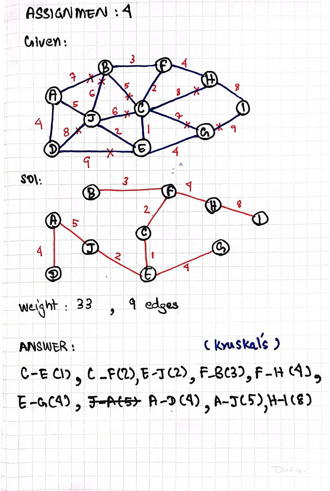
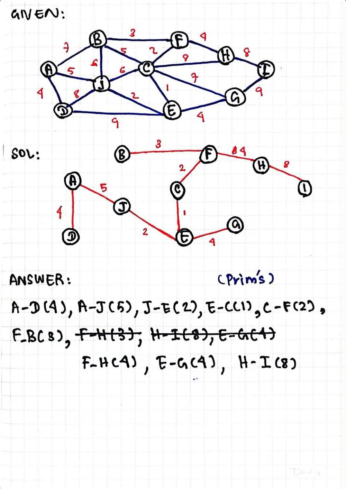

Algorithms — study console
Your study base for Algorithms for iSNE. Weeks 1–7, 10, 12 and 13, four assignments, and separate Midterm and Final areas.
What the course covers
Week 1: Computational complexity. Big O, Big Ω (Omega), Big Θ (Theta). Asymptotic complexity.
Week 2: Arrays. Linked lists (singly, doubly, circular). Sparse tables.
Week 3: Stacks. Queues. Priority queues. Heaps as priority queues.
Week 4: Trees, Binary Trees, Binary Search Trees (BST). Traversal. Insertion and deletion. Balancing: DSW and AVL. Splay trees. Heaps and heapsort. Expression trees.
Week 6: Multiway trees. B-Trees, B*, B**, B+, Prefix B+ and Bit Trees. Tries.
Week 7: Graphs. Graph representations, DFS/BFS, shortest paths, cycle detection, union-find, spanning trees, topological sort, Eulerian/Hamiltonian graphs and TSP.
Week 10: Intelligent agents. Rationality and task environments. Uninformed search (breadth-first, depth-first, iterative deepening). Heuristic search, A*. Hill climbing and simulated annealing.
Week 12: Game theory. Minimax and alpha-beta pruning. Horizon effect. Decision theory, MEU. Joint probability, product rule, Bayes' law. Wumpus World.
Week 13: Data compression. Prefix property. Huffman and adaptive Huffman coding. Run-length encoding.
Marks (from the syllabus): assignments 10% · midterm 40% · final 50%. You need 80% attendance to sit the exams.
How to use this
- Read a level (Weeks 1–7, 10, 12 and 13). Each one is a structured study path.
- Check the yellow Notes box on each level. That is your exam cheat-sheet.
- Flip the Flashcards until the answers feel easy.
- Take the Quiz. Wrong answers show a one-line reason, so you learn as you go.
- Play Code Practice. This matches your professor's exam style: real code with missing lines that you must type. Do these until you get all green.
Complexity Analysis
One big question this week: how do we measure if an algorithm is good?
What is computational complexity?
What it is: a measure of how much effort an algorithm needs — how much it costs to run.
Why we use it: many algorithms can solve the same problem. We want to pick the cheapest one.
The two costs:
- Time — how long it takes. This is the most significant one for us.
- Space — how much memory it uses.
Why not just time it in seconds?
Because real time is unfair. It depends on things that have nothing to do with the algorithm:
- The machine — the same program runs faster on a home PC than on the lab PCs.
- The language — a compiled C++ program is much faster than the same program in Basic.
So to compare in real time, everything would have to run on the same machine. Instead, we use logical units: we describe the relationship between
- n = the size of the data (the file), and
- t = the time taken to process it.
Time / size relationships
Linear: t = c·n
Time grows at the same rate as the data. If the data doubles, the time doubles too.
Tiny example: if 10 items take 10 steps, then 20 items take 20 steps.
Logarithmic: t = log₂ n
Doubling the data adds just one time unit. This is very fast.
Tiny example: log₂ 8 = 3 steps. Double the data to 16 → log₂ 16 = 4 steps. Twice the data, only +1 step.
Asymptotic complexity
What it is: real cost formulas are messy. We only care what happens when n gets large. So we drop every term that stops mattering. What is left is the asymptotic complexity.
The slide example:
F(n) = n² + 100n + log₁₀n + 1000
| n | F(n) | n² part | 100n part | 1000 part |
|---|---|---|---|---|
| 1 | 1,101 | 1 (0.1%) | 100 (9.1%) | 1,000 (90.8%) |
| 10 | 2,101 | 100 (4.8%) | 1,000 (47.6%) | 1,000 (47.6%) |
| 100 | 21,002 | 10,000 (47.6%) | 10,000 (47.6%) | 1,000 (4.8%) |
| 1,000 | 1,101,003 | 1,000,000 (90.8%) | 100,000 (9.1%) | 1,000 (0.09%) |
| 100,000 | 10,010,001,005 | 10,000,000,000 (99.9%) | 10,000,000 (0.1%) | 1,000 (~0%) |
Look at the pattern: for small n the constant 1000 is the biggest part (90.8%!). But as n grows, n² takes over — at n = 100,000 it is 99.9% of the whole value. So for large n, only n² matters:
F(n) ≈ n² → O(n²)
Big O, Big Ω, Big Θ
Three symbols for describing growth. They simplify complexity equations:
- Big O (Big Oh) — an upper bound. "It grows no faster than this." The one we use most.
- Big Ω (Big Omega) — a lower bound. "It grows at least this fast."
- Big Θ (Big Theta) — a tight bound. Upper and lower at the same time: "it grows exactly like this."
How to simplify
- Drop constant factors: O(2n) → O(n). O(½n²) → O(n²).
- Drop smaller terms: O(n² + 100n + 1000) → O(n²).
Example code — spot the complexity
Each block below is a growth rate you must recognize on sight.
- Computational complexity = how much effort / cost an algorithm needs. Time + space. Time is the most significant.
- Don't compare in seconds: speed depends on the machine and the language. Use logical units: n (data size) vs t (time).
- Linear t = c·n: double the data → double the time.
- Logarithmic t = log₂n: double the data → just +1 time unit.
- Asymptotic complexity: for large n, drop the terms that stop mattering.
- F(n) = n² + 100n + log₁₀n + 1000 → O(n²).
- Big O = upper bound (at most) · Big Ω = lower bound (at least) · Big Θ = tight (both).
- Know the loop shapes: one loop = O(n) · loop-in-loop = O(n²) · halving loop = O(log n) · direct access = O(1).
- Judging with small n. At n = 1, the 1000 term looks the biggest. Complexity is about large n — n² wins in the end.
- Keeping the constants. O(2n) is not a thing on the exam — write O(n).
- Comparing programs run on different computers (or written in different languages). That's timing the machine, not the algorithm.
- Thinking log is slow. O(log n) is one of the fastest: 1,000,000 items ≈ only 20 steps.
- Mixing up the symbols. O = at most, Ω = at least, Θ = exactly.
Arrays & Linked Lists
Two ways to store data in a line — and when each one wins. Plus sparse tables.
Arrays — the simplest structure
What it is: a collection of elements sitting next to each other in memory. Each element has an index (a number key).
Why it's fast: finding an element is just math. If an int array starts at memory address 1000, and each int is 4 bytes:
address of a[i] = 1000 + 4 · i
Tiny example: a[5] lives at 1000 + 4·5 = 1020. One calculation → O(1) access. No searching.
Three ways to index
- Zero-based — first element is a[0]. This is C++.
- One-based — first element is a[1].
- N-based — start anywhere, even letters:
Country[th] = "Thailand".
Dimensions & memory order
A single dimension array has 1 index: a[4]. A multidimensional array has more: a[2][3].
A 2D array is still stored in one flat row of memory. There are two orders:
| Order | The matrix 1 2 3 / 4 5 6 / 7 8 9 is stored as | Used by |
|---|---|---|
| Row-major | 1, 2, 3, 4, 5, 6, 7, 8, 9 | C / C++, Pascal, Python, SAS |
| Column-major | 1, 4, 7, 2, 5, 8, 3, 6, 9 | Fortran, MATLAB, OpenGL |
Static vs dynamic arrays
- Static: memory given at COMPILATION TIME. Size is fixed forever.
int a[10]; - Dynamic: memory given at RUN TIME. Size can be chosen while running.
int* a = new int[10];
Dynamic memory must be given back: delete [] a;
A jagged array is an array of arrays where each row has a different size:
Array performance, benefits, limits
| Operation | Cost |
|---|---|
| Get / set one element by index | O(1) constant |
| Walk over all elements in order | O(n) linear |
| Insert / delete in the middle | O(n) — everything after it must shift |
| Insert at the end | Amortised O(1) |
Benefits: good locality of reference (temporal + spatial → data caching works well), compact (low memory), and random access.
The limit: elements are locked in place, evenly spaced. Inserting inside means shifting other data. The fix for that → a linked structure.
Singly linked lists
What it is: a chain of nodes. Each node holds some data (info) and a pointer to the next node. A pointer head points to the first node. The last node points to NULL (0) to say "I am the end."
Why: no fixed size, and inserting/removing does not shift anything — we just re-aim pointers.
Building a small list by hand:
Insertion: head_insert & tail_insert
Two basic choices, also called push_front() and push_back().
head_insert — new node becomes the first node
- Make the new node:
Node* tmp = new Node(x); - Point it at the old first node:
tmp->next = head; - Move head to it:
head = tmp;
tail_insert — new node becomes the last node
Keep a second pointer tail aimed at the last node. Then: make the node, set tail->next = tmp;, move tail = tmp;. Same idea as head_insert, just at the other end.
Inserting in the middle: walk to the spot first, then re-aim two pointers. Compare with an array: no shifting needed!
Deletion — where the traps live
Delete from the head
Trap: if you run delete head; first, you lose your only way into the list! The safe 3 steps:
Node* tmp = head;— remember the old first node.head = head->next;— move head to the 2nd node.delete tmp;— now it is safe to free the old node.
Delete from the tail
Problem: the tail's predecessor (the node before it) must become the new tail, but a singly linked list has no backwards pointers. So we must walk from the start to find the second-to-last node:
Always check the special cases
- Empty list — deleting from it would crash. Test
isEmpty()first. - One-node list — after deleting, both head and tail must become NULL.
Efficiency
- Best case:
deleteHead()= O(1). - Worst case:
deleteTail()= O(n) (walk the whole list). - Average: between 1 and n → n/2 → O(n). Search (
isInList()) is the same: best O(1), worst and average O(n).
Doubly linked lists
What: each node has two pointers — next and prev. You can walk both directions.
Why: the whole point is the tail. tail = tail->prev; finds the predecessor instantly, so deleting the tail becomes O(1) — no walking.
The cost: insertion and deletion must fix more pointers (easy to get wrong), and each node needs extra memory. Same special cases: empty list, one-node list.
Circular linked lists & circular arrays
Circular linked list: the last node points back to the first — no NULL, no real start or end. Just one current pointer into the ring.
Why: perfect for taking fair turns:
- Processors sharing one resource — each gets its turn as
currentmoves around. - A multiplayer board game (poker) —
currenttracks whose turn it is.
Circular array (ring buffer): the same turn-taking idea with an array. It is stored as a normal array plus two variables: the index of the first and last element. When we reach the end of the array, we wrap around and reuse the free cells at the start.
Arrays vs linked lists — who wins?
Both store linear data. Neither is "better" — it depends on the job.
| Linked list wins | Array wins | |
|---|---|---|
| Size | Dynamic — no upper limit needed | — |
| Insert / delete | Easy anywhere — just re-aim pointers | — |
| Random access | — | Jump straight to any index, O(1) |
| Memory | — | No extra space for pointers |
| Cache locality | — | Elements sit together → caching works |
Sparse tables — the CMU grades story
What it is: a table that is mostly empty. Storing it as a full 2D array wastes huge space.
The slide example: store a grade for every CMU student in every course.
- ~25,000 students × ~1,000 courses × 1 byte per grade = 25,000,000 bytes.
- But students take about 7 courses each: 25,000 × 7 = 175,000 bytes of real data.
- 175,000 ÷ 25,000,000 = 0.007 → 99.3% of the table is empty!
Fix 1: two arrays
ClassesTaken (classes for each student) and StudentsInClasses (students in each class). Assuming max 8 classes each and max 200 students per class, 3 bytes per entry: 600,000 + 600,000 = 1,200,000 bytes — under 5% of the original.
But: what if a student takes more than 8 classes? Or a class has more than 200 students? Fixed limits are guesses.
Fix 2: linked lists
Use two arrays of linked lists (one list per student, one per class). No limits to guess, and even more space saved.
Example code — a working singly linked list
- Array address math: start + (element size × index). Base 1000, 4-byte ints → a[i] at 1000 + 4i.
- C++ arrays are zero-based and stored in row-major order.
- Static = size fixed at compile time. Dynamic = made with
newat run time, freed withdelete []. - Array costs: access O(1), iterate O(n), middle insert/delete O(n) (shifting), insert at end amortised O(1).
- Delete head (singly): tmp = head → head = head->next → delete tmp. Order matters!
- Find the node before the tail:
while (tmp->next->next != 0) tmp = tmp->next; - Doubly linked list:
tail = tail->prevmakes tail delete O(1). - Circular list = fair turns (processors, poker). Circular array = normal array + first & last indexes.
- Sparse table = mostly empty (99.3% in the CMU example). Replace with 2 arrays (<5% space) or better, linked lists.
- Deleting the head node before moving head.
delete head;first = the rest of the list is lost forever. - Wrong delete for arrays.
new int[10]must be freed withdelete [] a;— notdelete a;. Forgetting it = memory leak. - Off-by-one in the tail walk. You need the node before the last → the test is
tmp->next->next != 0, nottmp->next != 0. - Forgetting the special cases: empty list and one-node list break naive code (head and tail must both move).
- Saying "linked lists are always better." Arrays win at random access, memory use, and cache locality.
- Row/column-major mix-up. C++ is row-major: 1,2,3,4,5,6,7,8,9 — not 1,4,7,…
Stacks & Queues
Two rules for waiting in line: last-in-first-out, and first-in-first-out. Then lines with VIPs.
Stacks — LIFO
What it is: a linear structure you can only touch at one end — the top. New data goes on the top. Data also comes off the top.
Picture it: a stack of trays in the canteen. You take the tray that was put there last. That rule is called LIFO — Last In, First Out.
The 5 key operations
clear()— empty the stack.isEmpty()— is it empty?push(el)— putelon the top.pop()— take the top element off (and give it back).topEl()— look at the top element without removing it.
Stack use: matching delimiters
A compiler must check that ( ), [ ], { }, /* */ are matched correctly. The rule:
- See an opener → push it.
- See a closer → pop; it must match. (Pop from empty = error.)
- At the end, the stack must be empty.
Case A (from the slide) — success: while(m<(n[8] + o)) {p=7; /*initialise p*/ r=6;}
| Step | Stack after |
|---|---|
| push ( | ( |
| push ( | ( ( |
| push [ | ( ( [ |
| pop [ — matches ] | ( ( |
| pop ( — matches ) | ( |
| pop ( — matches ) | empty |
| push { | { |
| push /* | { /* |
| pop /* — matches */ | { |
| pop { — matches } | empty ✔ success |
Case B — error: a = b + ( c − d ) * ( e − f )) — the final ) arrives when the stack is already empty. Nothing to pop → error.
Implementing a stack: vector or linked list?
Both work. Here is the vector version from the slides:
The linked-list version is the same idea, but stores elements in a list<T> instead of a vector<T>.
Comparison (exam favourite)
- The linked list matches the stack more closely — no unused "capacity". In the vector version, capacity can be larger than the size.
- Push and pop are O(1) in both.
- But: pushing to a full vector forces it to allocate new memory and copy everything across — O(n) for that one push.
The STL stack (Standard Template Library)
Key members: empty(), pop(), push(el), size(), top().
Careful: STL pop() is void — it removes the top element but does not return it. Read it with top() first.
Queues — FIFO
What it is: a waiting line that uses both ends: data is added at one end and taken from the other. Like a queue in a bank. The rule is FIFO — First In, First Out.
The 5 key operations
clear()— empty the queue.isEmpty()— is it empty?enqueue(el)— addelto the end of the line.dequeue()— take the first element out.firstEl()— look at the first element without removing it.
Why: simulating real queues — e.g. how many bank staff keep service good, or how many toll kiosks to open.
Queue in an array → the circular array
The problem: in a plain array, every dequeue frees a cell at the front — and that space is never used again. The queue slides down the array and runs out of room.
The fix: a circular array. It's really a normal one-dimensional array plus two index variables, first and last. When we hit the end of the array, we wrap around and reuse the free cells at the start. The "circle" is just how we picture it.
The extra work is in enqueue() / dequeue(): check if we are at the last cell, and make sure we never overwrite the first element.
Better queue: the doubly linked list
With a doubly linked list, adding at one end and removing at the other are both O(1) — we hold pointers to both ends and can step from them directly.
With a singly linked list, one of the two ends needs an O(n) walk to reach its neighbour. That's why doubly wins here.
The STL queue's key members: back(), empty(), front(), pop(), push(el), size().
Priority queues
Why: real queues are rarely fair. A police car reaches the toll — it goes first. In a priority queue, elements leave based on their priority and their current position, not just arrival order.
Ways to build one
| Implementation | enqueue | dequeue |
|---|---|---|
| Linked list, kept sorted (search for the right spot when adding) | O(n) | O(1) |
| Linked list, unsorted (search for the best when removing) | O(1) | O(n) |
| Two lists: unordered low-priority + ordered high-priority | around O(√n), depends on list sizes | |
| Heap — the better way | follows the tree height (short!) | |
Heaps — a first look
What it is: a kind of binary tree where:
- every node's value is greater than or equal to the values in its children, and
- the tree is perfectly balanced — the last-level leaves are pushed to the leftmost positions.
As a priority queue: the value = the priority, so the root is always the highest priority.
Enqueue (add)
- Add the new element at the bottom of the heap, as a leaf.
- Let it climb up: swap it with its parent while it has higher priority.
Dequeue (remove the best)
- Remove the root — the highest priority.
- Move the last node into the root's place.
- Let it sink down: swap with its bigger child until it fits.
Each move follows one path up or down the tree — and the tree is short (that's the balance). Compare that with the O(n) linked-list searches above. Much more on heaps in Week 4.
- Stack = LIFO (Last In, First Out) — one end only. Queue = FIFO (First In, First Out) — both ends.
- Stack ops: clear, isEmpty, push, pop, topEl. Queue ops: clear, isEmpty, enqueue, dequeue, firstEl.
- Delimiter matching: opener → push, closer → pop-and-match, end → stack empty.
- Vector vs list stack: both O(1) push/pop, but a full vector push = O(n) (re-allocate + copy).
- STL
pop()removes but does not return the element. - Circular array:
isEmpty: first == -1·isFull: first == 0 && last == size-1 || first == last+1(wrapped around and caught up). - Queue on a doubly linked list: enqueue and dequeue both O(1).
- Priority queue: sorted list O(n) enqueue · unsorted list O(n) dequeue · two lists ≈ O(√n) · heap = best.
- Heap: node ≥ children, perfectly balanced, leaves leftmost. Add at bottom + climb up. Remove root, last node sinks down.
- Popping an empty stack / dequeuing an empty queue. Always check
isEmpty()first — the slides literally say "CRASH?". - Expecting STL
pop()to return the value. It doesn't.top()thenpop(). - Mixing the ends up. Enqueue at the back, dequeue at the front. A stack does both at the top.
- Circular array without the isFull check — you wrap around and overwrite the first element.
- Heap direction confusion. A new element climbs up. The node moved to the root after a dequeue sinks down.
- Thinking a heap is fully sorted. Only the parent ≥ child rule holds — left and right children have no order between them.
Binary Trees
From lines to hierarchies: trees, Binary Search Trees, traversal, deletion, balancing (DSW & AVL), splay trees, heaps.
Trees — the words you must know
Why trees: lists are one-dimensional. Much real data is a hierarchy: family trees, the grammar of a sentence, the taxonomy of organisms. Trees store hierarchies.
Picture an upside-down tree: root at the top, branches going down, leaves at the bottom. A tree is nodes connected by arcs.
- Root — the only node with no parent.
- Leaf — a node with no children.
- Path — for each node there is a unique path from the root to it. The length of the path = the number of arcs in it.
- Level of a node = path length + 1 (the root is level 1).
- Height of the tree = the highest path length (counted in arcs).
A tree can be empty. A tree can be one single node — then that node is both the root and a leaf.
Binary trees & Binary Search Trees
Binary tree: every node has at most 2 children (0, 1, or 2). Think of how If–Else splits into two paths.
Complete binary tree: every non-terminal (internal) node has 2 branches. Useful fact: if every nonterminal node has exactly 2 nonempty children, then
m = k + 1 (leaves m are one more than nonterminal nodes k)
Binary Search Tree (BST), also called an ordered binary tree, adds one rule. For each node holding value v:
- everything in its left subtree is less than v, and
- everything in its right subtree is greater than v.
Like the game "guess my number between 1 and 10" — each guess cuts the field in half.
A Binary Search Tree. Left of 5: all smaller. Right of 5: all bigger.
Implementing a binary tree
Why not an array? Deleting a node leaves empty cells, and inserting can push related nodes far apart. Inconvenient — so we use nodes and pointers.
The two-class design: BSTNode (one node: a key + left/right pointers) and BST (owns the root, does the work). BSTNode's members are public so the BST class can reach them.
Searching a BST
How it works: start at the root. Searching for el:
- el equals the node → found, stop.
- el is lower → follow the left pointer.
- el is higher → follow the right pointer.
- You reach NULL → el is not in the tree.
How fast?
- Worst case: O(n) — the tree is shaped like a linked list (every node one child).
- Average case: IPL ÷ n. IPL = Internal Path Length = the sum of the path lengths of all nodes. So the average depends on the tree's shape.
- Best shape: a complete tree. 10,000 nodes: worst shape needs up to 10,000 tests — balanced needs only 14, because the height is lg(10,001) ≈ 13.3 → 14.
Tree traversal — visiting every node once
What: visit each node exactly once. With n nodes there are n! possible orders — only a few are practical. Two families:
1 · Breadth-first — level by level
Top-down, left-to-right (or any of the 4 direction combos). Implemented with a queue: enqueue the root; then repeat: dequeue a node, visit it, enqueue its children.
2 · Depth-first — dive deep, then come back
Built from three moves: V = Visit the node, L = traverse the Left subtree, R = traverse the Right subtree.
| Order | Name | On the tree above |
|---|---|---|
| VLR | Pre-order | 5, 3, 2, 1, 4, 8, 6, 7, 9 |
| LVR | In-order | 1, 2, 3, 4, 5, 6, 7, 8, 9 — sorted! |
| LRV | Post-order | 1, 2, 4, 3, 7, 6, 9, 8, 5 |
| — | Breadth-first (top-down, L→R) | 5, 3, 8, 2, 4, 6, 9, 1, 7 |
(VRL, RVL, RLV also exist — the mirror versions.) In-order on a BST gives the values in sorted order — that's how you turn a BST into a sorted array.
These functions call themselves twice — this is called double recursion.
Traversal without recursion
Recursion quietly uses the runtime stack. Alternatives:
Iterative pre-order — bring your own stack
Push right before left, so the left child pops out first. Is it better? No — no double recursion, but it needs its own stack and up to 4 calls per loop. The real worry is space, not time (all traversals are O(n) time).
Threaded trees — hide the stack inside the tree
Add extra pointers (threads) to each node pointing to its predecessor / successor in the traversal. Either keep 4 pointers per node, or overload left/right to sometimes mean predecessor/successor — but then an extra data member must say which meaning is in use.
Morris's algorithm — reshape instead of remembering
Transform the tree while walking so no stack is needed: a tree with no left children is trivial to traverse (just go right). So LVR becomes VR.
Moved nodes keep their left pointers, so the original shape is restored. Time still depends on the loops (about 5–10% saving in tests on 5,000 random trees) — the clear win is space.
Insertion & Deletion
Insertion — find a dead end
Follow the search rule: bigger → right, smaller → left. When you hit an empty child spot, put the new node there. Simple — but over time this can make the tree very unbalanced.
Deletion — three cases, easy to hard
- A leaf (no children): just delete it. Its parent points to NULL.
- One child: delete it. The parent adopts the grandchild (points to the deleted node's child).
- Two children: now it's interesting. Two strategies: merging or copying.
Deletion by Merging
Cutting out the node leaves 2 subtrees. Every value in the left subtree is lower than every value in the right subtree. So:
- The root of the left subtree replaces the deleted node.
- The rightmost node of the left subtree becomes the parent of the right subtree.
The tree may gain height (like here) or lose it — merging can produce a very unbalanced tree. Not inefficient, but not perfect.
Deletion by Copying
Key insight: the rightmost node of the left subtree is the deleted node's immediate predecessor (and the leftmost node of the right subtree is its successor). So:
- Copy the predecessor's (or successor's) value into the deleted node's spot.
- Then delete that node instead — it's always an easy case (0 or 1 child).
Height does not grow, but always using the predecessor makes the left side bushy — so we can alternate between predecessor and successor.
Balancing a tree
Why bother: 10,000 nodes. Linked-list shape → up to 10,000 tests to find something. Balanced → 14 tests. Same data!
Method 1: rebuild from a sorted array
Put all the data in a sorted array (an in-order traversal gives you that). Then: the middle element becomes the root; the middle of the left half becomes one child, the middle of the right half the other; recurse.
Weakness: needs extra space for the array, and all values must be in it first.
Rotation — the tool behind everything else
A child rotates around its parent (right rotation lifts the left child; left rotation lifts the right child). One thing to burn into memory:
🔑 The middle subtree switches parents.
When child Ch rotates up around parent Par, the subtree between them (Ch's inner child) lets go of Ch and becomes Par's child. Nothing else changes.
Method 2: the DSW algorithm (Day, Stout & Warren)
Devised by Day, improved by Stout and Warren. Two phases, built entirely from rotations:
- Stretch: turn the tree into a backbone — a linked-list-like tree leaning right. (While a node has a left child, rotate that child up around it.)
- Balance: rotate every other node around its parent, going down the right branch. Repeat until the tree is perfectly balanced.
DSW rebalances the whole tree in O(n). Good when you only balance once in a while (the cost is amortised) — e.g. after many insertions and deletions.
AVL trees — stay balanced as you go
Named after Adel'son-Vel'ski and Landis. Instead of rebalancing the whole tree now and then (DSW), an AVL tree checks balance on every insertion or deletion and fixes problems locally with rotations.
Every node has a balance factor:
Balance = Height(left subtree) − Height(right subtree)
It must stay at +1, 0, or −1. (Height of an empty subtree counts as −1.) If an insert pushes some node's balance to +2 or −2, we rotate. An AVL tree may not look as perfectly even as a DSW result — that's fine, only the balance factors matter.
The 4 out-of-balance situations → 4 rotations
Name the case by where the new key landed, relative to the unbalanced node:
| Insertion into… | Case | The fix |
|---|---|---|
| Left subtree of the Left child | LL | One right rotation |
| Right subtree of the Right child | RR | One left rotation |
| Right subtree of the Left child | LR | Double: rotate the child left, then rotate right |
| Left subtree of the Right child | RL | Double: rotate the child right, then rotate left |
LL — insert 2 (slide example)
RR — insert 8 (slide example)
LR — insert 3 (slide example, double rotation)
RL — insert 7 (slide example, double rotation)
The "further issue" — imbalance higher up
Insert 9 into the tree above: every node on the way stays legal except 5, higher up, which hits −2. Fix it at that node: 9 sits right-right relative to 5 → RR-style rotation (7 rotates up around 5).
Deletion can also unbalance an AVL tree — also fixed by rotations, but it's more time-consuming: every node between the deleted one and the root must be checked (and possibly rotated).
Self-adjusting trees & splay trees
The idea: balancing assumes every node is equally popular. But some nodes are searched much more often. If the popular ones sit near the top, searching gets faster — even in a tree that isn't perfectly balanced.
Simple strategies: single rotation (rotate the accessed node around its parent) or move to root.
Splay trees
A special self-organizing BST: every access reorganizes the tree so recently used elements are easy to reach. Insertion, deletion and search all run in O(log n) amortized time. Every operation ends with splaying — moving the accessed node up. Three cases:
- Parent is the root: rotate the node around its parent. Done.
- Homogeneous (node and parent are both left children, or both right children): rotate the parent around the grandparent first, then the node around the parent.
- Heterogeneous (one left, one right): rotate the node around its parent first, then around the grandparent.
The verdict (exam-worthy): in theory, self-organizing trees compete well. In experiments, AVL almost always wins — and sometimes even plain BSTs do. Lesson: complexity analysis and amortized analysis aren't always the full story.
Heaps & Heapsort
(Max) heap: a binary tree where each node ≥ its children, perfectly balanced, last-level leaves leftmost. A min heap is the reverse — smallest on top.
As a priority queue (from Week 3): enqueue = add at the bottom, climb up. Dequeue = take the root, move the last node up top, let it sink down. Each is one short path — compare that with O(n) list searches.
Heapsort
Selection sort scans the whole remaining data to find the max each round — O(n²). A heap hands you the max for free (the root). So:
- Turn the data into a heap.
- Pop the root (the biggest) — move it to its final position.
- Fix the heap with the remaining nodes. Repeat.
If the data lives in an array, no second array is needed — sort in place by swapping positions.
Expression trees & Polish notation
What is 2 − 3 * 4 + 5? It depends how you group it! Each grouping is a different expression tree (operators inside, numbers at the leaves):
Now traverse the correct (−5) tree in the three depth-first orders:
| Traversal | Result | This notation is called |
|---|---|---|
| In-order (LVR) | 2 − 3 * 4 + 5 | Infix — normal notation |
| Pre-order (VLR) | + − 2 * 3 4 5 | Polish notation (prefix) |
| Post-order (LRV) | 2 3 4 * − 5 + | Reverse Polish (postfix) |
Notice: the in-order reading is the same for all three trees — that's exactly why infix needs parentheses, and prefix/postfix don't.
- Path length = arcs. Level = path length + 1. Height = longest path length. Empty subtree height = −1.
- BST rule: left < node < right. In-order (LVR) of a BST = sorted order.
- Complete binary tree fact: m = k + 1 (leaves vs nonterminal nodes).
- Traversals: VLR pre-order · LVR in-order · LRV post-order (V = Visit, L = Left, R = Right). Breadth-first uses a queue; iterative pre-order uses a stack (push right first!).
- Search: worst O(n) (list shape) · average IPL/n · balanced ≈ height ≈ lg n (10,000 nodes → 14 tests).
- Delete: leaf → cut · one child → parent adopts grandchild · two children → merging (left root up; rightmost of left adopts right tree) or copying (copy predecessor/successor value up, delete that easy node).
- Balance from sorted array: middle = root, recurse halves.
- DSW: phase 1 stretch to a backbone, phase 2 rotate every other node. O(n), whole tree.
- AVL: Balance = h(left) − h(right) ∈ {−1, 0, +1}. LL→right rotation, RR→left rotation, LR & RL→double rotation. Fix at the lowest unbalanced node. Rotation key: the middle subtree switches parents.
- Splay cases: parent-is-root → one rotation · homogeneous → grandparent first · heterogeneous → parent first. In experiments AVL beats splay almost always.
- Heapsort: build heap → pop root → re-heap → repeat. In place with swaps.
- Expression trees: pre-order = Polish (prefix) · post-order = Reverse Polish (postfix) · in-order = infix.
- Balance factor backwards. On our slides it's left − right: +2 means the LEFT side is too tall (LL or LR case), −2 means the RIGHT side (RR or RL).
- Rotating at the wrong node. Fix the lowest node that hit ±2, and classify LL/RR/LR/RL by where the new key sits relative to that node — not relative to the root.
- Doing one rotation for LR / RL. Those are double rotations. One rotation just moves the problem around.
- Losing the middle subtree in a rotation. The child's inner subtree must switch parents — this is the #1 lost-marks spot when drawing rotations.
- Merging vs copying confusion. Merging restructures (left root takes over — height can grow). Copying just copies one value up and deletes an easy node (height does not grow).
- Wrong letter order. In-order is LVR — visit between the subtrees. The letters ARE the definition.
- Calling a heap a BST. A heap only promises parent ≥ children. Left vs right have no order.
- Height off by one. Height counts arcs: a single-node tree has height 0.
B-Trees & Tries
What changes when the data is too big for RAM: multiway trees, the B-tree family (B, B*, B+, Prefix B+, Bit), and tries.
Why binary trees stop working
Last week we assumed everything was in RAM. Now suppose the data is too big and lives on a hard disk. Reaching a piece of disk memory costs:
seek time + rotation time + transfer time
Seek time is the killer. It depends on the disk head physically moving to the right position — mechanical, not electronic.
- Seek time is measured in milliseconds.
- CPU work is measured in microseconds — at least 1,000× faster.
A binary tree is the worst possible shape here: each node holds one key, so descending 5 levels can mean 5 separate disk seeks. It was spread across blocks with no thought for how the disk reads.
Multiway trees — fatter nodes, fewer levels
A multiway tree differs from a binary tree in a few key ways:
- Each node has m children.
- Each node has m−1 keys.
- The keys are in ascending order.
- The keys in the first i children are smaller than the i-th key.
- The keys in the last m−i children are larger than the i-th key.
A multiway tree. Count them: a node with k keys always has k+1 pointers.
This one still suffers from malaise — it is unbalanced, so finding 32 takes longer than finding 21. Fat nodes alone are not enough; we also need every leaf on the same level. That is what a B-tree adds.
B-Trees — one node = one disk block
The idea in one line: make each node exactly the size of a disk block, so one seek brings back as many keys as possible.
How many keys fit in a node depends on the size of each key and the size of the block, and block size depends on the system.
A B-Tree of order m has these properties:
- The root has at least 2 subtrees, unless it is a leaf.
- Each nonroot, nonleaf node holds k−1 keys and k pointers, where ⌈m/2⌉ ≤ k ≤ m.
- Each leaf holds k−1 keys, where ⌈m/2⌉ ≤ k ≤ m.
- All leaves are on the same level.
Nice consequence: the root — and maybe the whole first level — can be kept in RAM, so a search of a big tree may cost only one or two real disk accesses.
Implementing and searching
The node carries its keys and pointers inline, plus a count of how many keys are actually in use:
Searching is just a binary-tree search with a wider fan-out. Start at the root and pick the branch whose range contains the search value:
Within a node you scan the keys in RAM, which is free. Following a pointer is what costs a seek — so the wider the node, the cheaper the search.
Inserting — the tree grows upward
The challenge: in a B-tree all leaves must be on the same level. Not even a balanced binary tree demands that.
So the direction of construction flips. Binary trees are built top down — the root is placed and nodes divide around it. A B-tree is built bottom up — leaves are positioned and rearranged, and the root is decided last.
The algorithm:
- Search the tree to find the leaf the key belongs in.
- If there is room (fewer than m−1 keys already), just insert it. Done.
- Otherwise the node must split. Choose the median: lower keys form the left node, higher keys form the right node.
- The median moves up to the parent — which may itself now be full, so it may split too.
- Repeat upward until something has room, or the root is reached.
Worked example — insert 33, order 5
Order 5 means at most 4 keys per node. Watch the highlighted node.
1 — the target leaf already holds 4 keys. It is full.
2 — inserting 33 gives it 5 keys. Overflow.
3 — split at the median 32. Left keeps 25 30, right takes 33 35, and 32 moves up into the parent. The parent had room, so it stops here.
When the root itself is full
This is the only case where a B-tree gains height.
A full root receives a promoted median and overflows.
It splits in two and a new root is created above them. The tree is one level taller — and every leaf is still on the same level.
Deleting
Deletion asks two questions first:
- Is the key in a leaf? If so, will the leaf still be at least half full afterwards?
- Is it in an internal node? Then which value becomes the new separator?
Leaf nodes can simply be deleted, which may leave the leaf with too few keys. Then the tree must be rebalanced: pick a sibling leaf and redistribute the keys. If a neighbour has enough to share, the median becomes the new separator key and the rest are shared out. If that leaves the parent short of keys, the fix iterates upward toward the root.
Internal nodes cannot just be removed — they separate two subtrees. Promote one of:
- the largest value in the left subtree, or
- the smallest value in the right subtree.
Either choice reduces the problem to deleting from a leaf or from another internal node — both of which we have now defined. Same trick as deleting from a BST.
B*-Trees — delay the split
Every node is a block, and every block costs a seek. B*-Trees reduce accesses further by keeping nodes fuller:
- A B-tree must be at least half full.
- A B*-Tree must be two-thirds full.
How it achieves that: it delays splitting by splitting 2 nodes into 3, rather than 1 node into 2.
- Overflow first. If a leaf fills up but its sibling has room, the surplus overflows into the sibling instead of splitting.
- Split only when both are full. Then the two full nodes become three, each about two-thirds full.
A B**-Tree pushes the same idea again: required to be 75% full.
B+Trees — all data in the leaves
The problem being solved: in-order traversal. On a binary tree, in-order gives you the values in ascending order cheaply. On a B-tree it is awkward — leaves can be read a block at a time, but internal nodes give you only one value per visit, and you keep bouncing between levels.
The fix: in a B+Tree the internal nodes are pure index — signposts only.
- Values stored in index nodes are repeated in the leaves.
- All data lives in the leaves; indexes only point to the right leaf.
- Leaves are chained with forward pointers, so an in-order traversal reads leaves straight through and never touches an internal node.
A B+Tree. The index keys 20 and 30 reappear in the leaves — that is the giveaway.
Insert: when a leaf splits, the promoted value becomes both a value in the leaf and an index in the parent.
Delete: removing a value from a leaf does not require removing the matching index — it is still a perfectly good signpost. If a leaf gets too small it merges with a sibling and the indexes are updated.
Prefix B+Trees and Bit Trees — shrink the index
That last point is the doorway. If an index key does not have to be a stored value, it only has to separate them. So store the shortest thing that still separates.
Prefix B+Tree: the index holds only a prefix of the key — BF instead of BF90, like the guide word at the top of a dictionary page.
- Shorter prefix → more keys per index node.
- More keys → more children per node.
- More children → fewer levels → fewer seeks.
If every key in a region starts AB12XY…, storing "AB" at every level between the leaves and the root is pure waste. Keep only the distinguishing part.
Bit Tree: take it to the extreme. Store the D-bit — the single distinction bit, the first bit position where two values differ:
Especially valuable when the tree stores complicated objects: you never store the object in the index, only enough to steer the search to the right leaf.
Tries
Only a portion of the key is ever needed to search. But finding the right prefix is awkward, and maintaining prefixes is complicated.
A tree that navigates using parts of the key itself is called a "trie."
The name comes from retrieval. Instead of comparing whole keys at each node, you consume the key one piece at a time — one character, or one bit — and that piece chooses the branch. The path from the root spells the key.
Exam traps
- Keys vs pointers. A node with k keys has k+1 pointers. Order m means m pointers and m−1 keys — not m keys.
- "Order 5" is the pointer count. So a node holds at most 4 keys and splits on the 5th.
- Half full, not half empty. B-tree ≥ ½ · B*-Tree ≥ ⅔ · B**-Tree ≥ ¾.
- Splitting promotes the median, and the median goes up, not into either half.
- Height only grows at the root. Every other split is absorbed by a parent.
- B+ ≠ B. In a B+Tree every value is in a leaf and index values are repeated. In a plain B-tree a value appears exactly once, wherever it sits.
- Why any of this exists: seek time. If a question asks "why not just use an AVL tree", the answer is milliseconds vs microseconds.
Assignment 1 — BST
Build a Binary Search Tree (BST) step by step, then survive three deletions.
What the worksheet asks (plain words)
Part 1: Start with an empty tree. Do these operations, in order, then draw the tree:
Insert 10, 5, 29, 4, 8, 28, 3, 6, 15 — then — Delete 3, Delete 28
Part 2: From that result, Delete 10 and draw the tree again.
The plan before drawing
- Insert rule: start at the root. Smaller → go left, bigger → go right. Insert at the first empty spot.
- Delete a leaf: just remove it.
- Delete a node with 1 child: the parent adopts the child.
- Delete a node with 2 children: deletion by copying — copy the successor (the leftmost node of the right subtree) into its place, then remove that node. (The method used in our class. Alternatives shown at the bottom.)
Step by step — the nine insertions
The two deletions → Answer to Part 1
After all 9 inserts, Delete 3 and Delete 28
Part 2 — Delete 10 (two children!)
10 has two children (5 and 29) → deletion by copying:
- Find the successor = leftmost node of the right subtree. Go right to 29, then left as far as possible → 15.
- Copy 15 into 10's place.
- Delete the old 15 node — it's a leaf, easy. (29 now has no left child.)
15 replaces 10 at the root
Alternative methods (only if asked for them)
Full solution code
This program builds the worksheet tree, does the deletions, and prints the tree in-order after each part (in-order = sorted, an easy way to check yourself).
Practice — fill in the missing lines
Same code, but the exam-critical lines are gone. Type them, then hit Check.
Assignment 2 — AVL
Insert into an AVL (Adel'son-Vel'ski and Landis) tree — and rotate whenever a balance factor hits ±2.
What the worksheet asks (plain words)
You are given an AVL tree. Part 1: insert 18, keep it balanced, redraw. Part 2: then insert 15, then 14 (continuing from Part 1's result), redraw.
The given tree — balance factors shown beside each node (all legal: −1, 0, +1)
The plan before drawing
- Insert like a normal BST (smaller left, bigger right).
- Recompute balance factors up the path: Balance = Height(left) − Height(right).
- If a node hits +2 or −2: find the lowest such node, name the case by where the new key landed relative to it (LL / RR / LR / RL), and rotate. Remember: the middle subtree switches parents.
Part 1 — Insert 18
Path: 18 > 10 → right · 18 > 13 → right · 18 > 17 → right → new right child of 17.
Which case? Relative to 13, the new key went into the Right subtree of the Right child (into 17's right side) → RR → one left rotation: 17 rotates up around 13.
17 took 13's place; 13 became 17's left child. All balance factors legal.
Part 2 — Insert 15, then Insert 14
Insert 15 — no rotation needed
Path: 15 > 10 → right · 15 < 17 → left · 15 > 13 → right → new right child of 13. Check the factors — everyone stays legal:
Insert 14 — RL case!
Path: 14 > 10 → right · 14 < 17 → left · 14 > 13 → right · 14 < 15 → left → new left child of 15.
Which case? Relative to 13: the key went to the Right child (15), then into its Left subtree → RL → double rotation: first rotate 14 right around 15, then rotate 14 left around 13. 14 ends up as the parent of both.
14 is the parent of 13 and 15. Every balance factor is legal.
If your teacher meant "start again from the original tree" for Part 2: insert 15 → 13 hits −2, RL case → 15 becomes parent of 13 and 17. Then insert 14 → right child of 13, no rotation. Final tree:
Solution code — rotations you can run
The exam wants drawings, but these little functions ARE the drawings, in code. Note the "middle subtree" line in each rotation.
Practice — fill in the missing lines
Assignment 4 — Kruskal & Prim
Build the minimum spanning tree of one weighted graph twice: once with Kruskal's algorithm, once with Prim's algorithm starting from A. Write the order in which edges are added.
What the assignment asks
The graph has 10 vertices (A–J) and 18 weighted edges. A spanning tree of 10 vertices always has 9 edges.
| Weight | Edges |
|---|---|
| 1 | C–E |
| 2 | C–F · E–J |
| 3 | B–F |
| 4 | A–D · F–H · E–G |
| 5 | A–J · B–C |
| 6 | B–J · C–J |
| 7 | A–B · C–G |
| 8 | C–H · D–J · H–I |
| 9 | D–E · G–I |
Part 1 — Kruskal's algorithm
- Sort all edges by weight, smallest first.
- Take the next edge. If it joins two vertices that are not already connected, add it. If it would close a cycle, skip it.
- Stop when the tree has |V| − 1 = 9 edges.
Part 2 — Prim's algorithm from A
- Start with only A in the tree.
- Look at every edge with one end inside the tree and one end outside. Add the cheapest.
- Repeat until every vertex is in the tree.
My answer
Kruskal — order of edges added
C–E (1) → C–F (2) → E–J (2) → F–B (3) → F–H (4) → E–G (4) → A–D (4) → A–J (5) → H–I (8)
Prim from A — order of edges added
A–D (4) → A–J (5) → J–E (2) → E–C (1) → C–F (2) → F–B (3) → F–H (4) → E–G (4) → H–I (8)
Handwritten working


Things that lose marks
- Ties. Edges with equal weight can be taken in either order. In Kruskal, C–F and E–J (both 2) can swap, and so can A–D, F–H and E–G (all 4). In Prim, F–H and E–G (both 4) can swap. Any of these orders is correct.
- Kruskal skips, it does not stop. B–C (5) is the first rejected edge: B and C are already joined through F. Keep going down the sorted list until there are 9 edges.
- Prim grows one connected tree. You cannot take C–E (1) first when starting from A, because neither end is in the tree yet. That is the difference from Kruskal, which can build separate pieces and join them later.
- Count the edges. 10 vertices → 9 edges. More means a cycle; fewer means the tree is not finished.
Graphs
Trees force parent/child hierarchy. Graphs are more flexible: they model vertices (nodes) and the edges (connections) between them.
1 · Core graph definitions
| Term | Meaning from the Week 7 material |
|---|---|
| Simple graph | G=(V,E): a nonempty set of vertices V and a possibly empty set of edges E. |
| Directed graph (digraph) | Direction matters: an edge from vi to vj is not the same as one from vj to vi. |
| Multigraph | Two vertices may be joined by multiple edges. |
| Pseudograph | A multigraph where the restriction vj ≠ vi is removed. |
| Path | A route from v1 to vn by following edges. |
| Circuit | A path where v1 = vn and no edge is repeated. |
| Cycle | A circuit where all vertices are different. |
| Weighted graph | Each edge has a value, such as distance or cost. |
| Complete graph | Every pair of vertices has a joining edge. |
2 · Representing a graph as data
A drawn network is easy for a person to read, but the deck stresses that it is not an effective storage format. Three representations are introduced:
| Representation | Idea |
|---|---|
| Adjacency list | For each vertex, store the vertices directly connected to it. Example from the deck: A → B, C, D. |
| Adjacency linked list | Store each vertex with a linked list of its adjacent vertices. |
| Adjacency matrix | A table with one row and column per vertex; the supplied simple-graph example uses 1 for a connection and 0 for no connection. |
3 · Traversal: DFS vs BFS
Graph traversal means visiting every node once. It is harder than tree traversal because a graph can contain a cycle, so the algorithm marks nodes as visited. Graphs may also contain isolated vertices, so an outer loop is needed to find unvisited parts.
| DFS | BFS |
|---|---|
| Picks one neighbour and keeps going until a dead end. | Visits every neighbour before moving to their neighbours. |
| Uses recursion in the supplied algorithm (therefore a stack). | Uses a queue. |
Marks vertices using num(v) so cycles do not cause an infinite loop. | Also marks each vertex before enqueueing it. |
Depthfirstsearch()
for all vertices v
num(v) = 0
edges = null
i = 1
while there is a vertex v with num(v) = 0
DFS(v)
output edges
DFS(v)
num(v) = i++
for all vertices u adjacent to v
if num(u) is 0
attach edge(uv) to edges
DFS(u)
Breadthfirst()
for all vertices u
num(u) = 0
edges = null
i = 1
while there is a vertex v such that num(v) == 0
num(v) = i++
enqueue(v)
while queue is not empty
v = dequeue()
for all vertices u adjacent to v
if num(u) is 0
num(u) = i++
enqueue(u)
attach edge(vu) to edges
output edges
4 · Shortest paths
Dijkstra's algorithm — one start vertex
Each edge in a weighted graph has a value. The shortest path is the path with the least total value. Dijkstra starts every current distance at ∞, except the first vertex at 0. It repeatedly selects the unchecked vertex with the smallest current distance and tests whether it gives its neighbours a shorter route.
DijkstraAlgorithm(weighted simple digraph, vertex first)
for all vertices v
currDist(v) = ∞
currDist(first) = 0
toBeChecked = all vertices
while toBeChecked is not empty
v = a vertex in toBeChecked with minimal currDist(v)
remove v from toBeChecked
for all vertices u adjacent to v and in toBeChecked
if currDist(u) > currDist(v) + weight(edge(vu))
currDist(u) = currDist(v) + weight(edge(vu))
predecessor(u) = v
All-to-all shortest paths — WFI
The Warshall–Floyd–Ingerman algorithm starts from a weight matrix where non-directly-connected nodes have distance ∞, then repeatedly tests whether routing through an intermediate vertex improves a pair's distance.
WFIalgorithm(matrix weight)
for i = 1 to |V|
for j = 1 to |V|
for k = 1 to |V|
if weight[j][k] > weight[j][i] + weight[i][k]
weight[j][k] = weight[j][i] + weight[i][k]
5 · Cycle detection and Union-Find
Cycle detection
The deck extends DFS: if an adjacent vertex is already visited and the edge is not already one of the traversal edges, a cycle is detected. It notes that digraphs are slightly more complicated.
DFS(v)
num(v) = i++
for all vertices u adjacent to v
if num(u) is 0
attach edge(uv) to edges
DFS(u)
else if edge(vu) is not in edges
cycle detected
Union-Find
Union-Find first finds which set an element belongs to, then unions two sets. In this graph context it can be used to determine whether two nodes are connected. The supplied description merges sets into a linked list.
6 · Spanning trees: Kruskal and Prim
A spanning tree keeps all destinations connected while removing unnecessary routes. When edge costs matter, the goal is a minimum spanning tree.
Kruskal(weighted unconnected undirected graph)
tree = null
edges = sequence of all edges of graph sorted by weight
for (i = 1; i ≤ |E| and |tree| < |V|-1; i++)
if e from edges does not form a cycle with edges in tree
add e to tree
Kruskal repeatedly tests the smallest available edge and adds it only if it does not create a cycle, stopping when the spanning tree is complete.
Prim's algorithm
Prim reaches a minimum spanning tree a different way: start from one vertex and repeatedly add the cheapest edge that joins a vertex in the tree to a vertex outside it. Kruskal can build separate pieces and join them later; Prim always grows one connected tree.
7 · Topological sort and networks
Topological sort
Some digraphs represent tasks that must happen in a particular order. Topological sort orders their vertices by repeatedly locating a minimal vertex, numbering it, and removing it and its edges.
toposort(digraph)
for i = 1 to |V|
find minimal vertex v
num(v) = i
remove v from digraph and all edges
Network
The deck defines a network as a special digraph with one source (no incoming edges), one sink (no outgoing edges), and a capacity on each edge. Examples include water through pumps/pipes and data through a computer network.
8 · Eulerian graphs and the Chinese Postman
| Eulerian trail | A route through a graph that includes every edge only once. |
| Eulerian cycle | An Eulerian trail that is also a cycle. |
| Eulerian graph | A graph containing an Eulerian cycle. |
The deck states: a graph is Eulerian if every vertex is incident to an even number of edges; a graph contains an Eulerian trail if it has exactly two odd-degree vertices.
Chinese Postman
The goal is to traverse every street at least once and return to the start using as short a walk as possible. If the graph is not Eulerian, repeat edges between odd-degree vertices until there are no odd-degree vertices, choosing short repeats where possible.
9 · Hamiltonian graphs and TSP
A Hamiltonian cycle passes through all vertices of a graph. A Hamiltonian graph has at least one Hamiltonian cycle. The deck states that all complete graphs are Hamiltonian.
Travelling Salesman Problem
The TSP asks for the shortest Hamiltonian cycle: visit every city while choosing the shortest tour.
The deck presents two approximate approaches:
- Begin with a minimum spanning tree, follow it, and use triangle shortcuts when a node would be visited again. The deck states the TSP solution should be no more than
2 × l, wherelis the minimum spanning tree length. - Begin at a root, insert its nearest neighbour to make a loop, then repeatedly add the next nearest neighbour by linking it to its two closest neighbours until all nodes are linked.
Intelligent agents & search
An agent senses an environment and acts in it. A problem-solving agent decides what to do by searching a tree of possible action sequences.
1 · Agents, percepts and actions
| Term | Meaning |
|---|---|
| Agent | Anything that perceives its environment and acts upon it. |
| Sensors | How the agent perceives (eyes, ears, a camera, a temperature monitor). |
| Actuators | How the agent acts (arms, motors, sending network packets). |
| Percept | The inputs the agent receives at one instant. |
| Percept sequence | The complete history of everything the agent has perceived. In general an agent should use the whole sequence to choose an action. |
Vacuum Cleaner World
Two locations, A and B, which can be dirty. The agent perceives where it is and whether that square is dirty. Its actions are suck, move left, move right or do nothing.
A simple agent function: "If the current square is dirty, suck. Otherwise move to the other square." Whether that is good depends on how success is measured.
2 · Rationality and performance measures
A rational agent does the right thing, the thing that makes it most successful. So we need a performance measure: an objective test of success set by the designer (not the agent's own opinion, which could be delusional).
What is rational at any moment depends on four things:
- The performance measure that defines success.
- The agent's prior knowledge of the environment.
- The actions the agent can perform.
- The percept sequence to date.
| Idea | Meaning |
|---|---|
| Rationality vs omniscience | Agents are not expected to know everything. Rationality maximises expected performance; perfection maximises actual performance. |
| Exploration | When the environment is not fully known, the agent takes actions to change its future percepts and find out more. |
| Learning | A rational agent learns from what it perceives to improve its behaviour. Computation happens at three levels: by the designer, when the agent decides its next action, and when it learns from experience. |
| Autonomy | An agent that relies only on prior knowledge and does not learn lacks autonomy (the dung beetle keeps plugging its nest after the ball is taken away). Autonomy need not exist from the start: the designer installs some initial knowledge. |
3 · Task environments
| Dimension | Question to ask |
|---|---|
| Fully vs partially observable | Can the sensors access the complete (relevant) state at each point in time? Vacuum Cleaner Man only detects dirt in his own square → partially observable. |
| Deterministic vs stochastic | Is the next state decided entirely by the current state and the agent's action? If outside influences can change things → stochastic. Deterministic except for other agents' actions → strategic. |
| Episodic vs sequential | Is each decision independent of earlier ones? Checking defects on a production line is episodic; chess is sequential. Episodic is simpler because no planning ahead is needed. |
| Static vs dynamic | Can the environment change while the agent is deciding? Static waits. Semidynamic: the environment does not change but the agent's score does (time pressure). |
| Discrete vs continuous | Are percepts, actions and states a limited set, or a continuous range? |
| Single vs multi-agent | Is there only one agent? Competitive: one agent's gain is another's loss. Cooperative: one agent's success helps another (avoiding collisions when driving). |
| Environment | Observable | Deterministic | Episodic | Static | Discrete | Agents |
|---|---|---|---|---|---|---|
| Chess with a clock | Fully | Strategic | Sequential | Semidynamic | Discrete | Multi |
| Medical diagnosis | Partially | Stochastic | Sequential | Dynamic | Continuous | Single |
| Autonomous vehicle | Partially | Stochastic | Sequential | Dynamic | Continuous | Multi |
4 · Agent programs
The simplest program is a lookup table from percepts to actions. It works, but it does not scale: a table for chess would need about 10150 entries. So the table has to be replaced by short code.
| Agent type | How it decides | Weakness / example |
|---|---|---|
| Simple reflex | Uses the current percept only, ignoring the percept sequence. | "If the car in front brakes, brake." Weak when the environment is not fully observable; infinite loops are often unavoidable. |
| Model-based reflex | Keeps an internal model (state) of the environment, updated by each new percept, and applies its rules to that state. | Handles parts of the world it cannot currently see. |
| Goal-based | Adds a goal. Uses searching and planning to reach a desired future state. | Brake lights ahead → the car will slow → to reach point B without a crash, braking is a good idea. |
| Utility-based | Goals are a crude happy/unhappy split. Utility puts a number on how good a state is. | Many routes reach the destination; some are quicker, safer or cheaper. Brake or overtake? |
| Learning | Starts in an unknown environment and works out its own way to succeed. | A learning chess program should not lose the same way twice. |
5 · Problem-solving agents
- Goal formulation: identify the goal states, the set of states where the goal is satisfied.
- Problem formulation: pick the subset of states and actions worth considering (in chess, ignore "knock the board over").
- Search for a sequence of actions → the sequence is the solution → execute it.
The 16 grid (sliding-tile puzzle)
| Goal | One single goal state: tiles 1–15 in order with the blank in the bottom-right corner. |
| Actions | Left, Right, Up, Down (ignore half-moved tiles, shaking the game and so on). |
| States | 16!/2 = 10,461,394,944,000 |
The search takes the form of a tree traversal. Several actions lead back to a state seen before, which can cause an infinite loop. The 16 grid is NP-hard: no polynomial-time algorithm is known (the slides put it as "no algorithm can solve the problem in polynomial time"), but a proposed solution can be checked very quickly.
6 · Uninformed search
No information about where the goal is. The agent can only generate successors and tell goal from non-goal states. In the diagrams, red nodes are states that repeat an earlier state.
| Strategy | Idea | Remember |
|---|---|---|
| Breadth-first | Search each level completely before going deeper. FIFO queue. | Time is not the big problem, space is. Memory is exponential: O(bd+1) for branching factor b and goal depth d. |
| Uniform cost | Like breadth-first, but steps have different costs: always take the cheapest step. If all steps cost the same it equals breadth-first. | Can loop forever on a zero-cost action (NoOp). May waste time on many small steps when one big step is better. |
| Depth-first | Expand the deepest node of the current branch first. LIFO stack. | Needs less memory (finished branches are dropped). May find a deep goal instead of a shallower one. Never finishes if a branch is unbounded. |
| Depth-limited | Depth-first with a depth limit l. | No infinite descent, but choosing l can be hard or impossible. |
| Iterative deepening (IDDFS) | Depth-limited search repeated with l = 0, 1, 2, … | Behaves like depth-first for memory and like breadth-first for results. O(bd), slightly better than breadth-first, and it never generates nodes below the goal. |
| Iterative lengthening | Iterative deepening using path cost instead of depth. | Not as efficient as the others. |
| Bidirectional | Search forwards from the start and backwards from the goal until the two meet. | Works best with a single goal state, such as the 16 puzzle. |
d is generated once, level d−1 twice, d−2 three times: total = d·b + (d−1)·b² + … + 1·bd → O(bd).7 · Informed (heuristic) search
Uninformed search is inefficient. If something is known about the environment, a heuristic function can say which direction looks better.
| Strategy | Idea |
|---|---|
| Best-first | Expand the seemingly best node first, judged by a heuristic. (If we truly knew the best choice there would be nothing to search.) |
| Heuristic function | Returns an estimate of how promising a state is. For the 16 puzzle: the number of tiles in the right place, or the total distance tiles must move if each could go straight to its goal position. |
| Greedy best-first | Expands the node that looks closest to the goal. Like depth-first, it can make false starts or loop between states. |
| A* search | Combines the cost so far with the estimated cost to the goal: f(n) = g(n) + h(n). Nodes are ranked by this total. |
Dijkstra's algorithm is related: it returns the shortest route from the start node to every other node.
8 · Local search and optimisation
Sometimes the route does not matter, only a goal state or the best state found.
| Hill climbing | Keep moving to a neighbouring state that gives a better result. When no neighbour is better, you are at a peak. It only looks at immediate neighbours (finding Everest in thick fog with amnesia). |
| Local maximum | The main problem with hill climbing: standing on Doi Suthep and believing it is Everest. |
| Simulated annealing | Shakes the state, roughly at first and then more gently, to escape a local maximum and find a nearby higher slope (Doi Inthanon). |
Adversarial search, game theory & probability
How to plan ahead when another agent is planning against you, and how to choose an action when you cannot be certain of the outcome.
1 · Game theory
Game theory is a branch of economics that studies any multi-agent environment where one agent's actions affect another agent, cooperatively or competitively.
The Prisoner's Dilemma
Two suspects are held separately and offered the same deal. Neither knows what the other will choose.
| B stays silent | B betrays | |
|---|---|---|
| A stays silent | A: 6 months · B: 6 months | A: 10 years · B: goes free |
| A betrays | A: goes free · B: 10 years | A: 2 years · B: 2 years |
The lecture's "Who stole the final exam?" game has the same shape: your grade for Admit / Accuse / Deny depends on what everyone else chooses.
2 · What counts as a "game"
In AI, games are deterministic, turn-taking, two-player, zero-sum games with perfect information: a deterministic, fully observable environment where two agents alternate moves and the final utilities are equal and opposite (chess: winner +1, loser −1, or 0 for a draw).
| Part of the definition | Meaning |
|---|---|
| Initial state | The starting board position and whose move it is. |
| Successor function | Returns the list of legal moves and the state each one leads to. |
| Terminal test | Decides whether a state is terminal, i.e. the game is over. |
| Utility function | An objective function giving a numeric value for terminal states, for example −1, 0 or 1. |
Games suit AI because they are easy to represent, the agent has a small number of actions and the results of actions are well defined (unlike football, with imprecise rules and a huge range of actions).
35100 ≈ 10154 nodes. So a decision has to be made even when it is not provably optimal.3 · Game trees and minimax
From the definition we can build a game tree. A normal search returns a fixed sequence of actions, but here the opponent also moves, so we need a contingent strategy. The optimal strategy does at least as well as any other against an infallible opponent.
The minimax algorithm assumes the opponent plays optimally and maximises the worst-case outcome.
| Move | Opponent's replies | Worst case (MIN) |
|---|---|---|
| a1 | 4, 7, 3 | 3 ← chosen |
| a2 | 2, 12, 6 | 2 |
| a3 | 10, 11, 2 | 2 |
| Efficiency | Maximum depth m, b legal moves at each point: time O(bm), space O(bm). Exponential time. |
| Multiplayer games | The utility becomes a vector, one value per player, e.g. (5, 2, 3). Each player still picks the action leading to their best worst case. Alliances often form to stop one player winning. |
4 · Alpha-beta pruning
If a player already has a better choice at the parent of node n or anywhere higher up, n will never be reached, so it can be pruned (not searched).
- Search a1 depth-first: worst case 3.
- Search a2: the first leaf is 2, already worse than 3. Stop. c2 and c3 are pruned.
- Search a3: 10 and 11 are not worse than 3, so all three leaves must be examined before the 2 is found.
O(bd/2) nodes are examined. Even random ordering helps. It still may not be fast enough for real play.5 · Imperfect, real-time decisions
The program must decide within a time limit, so the search is cut off at a non-terminal state and that state is scored with a heuristic evaluation function.
| Chess feature | How it scores |
|---|---|
| Material value | Each piece has a value, e.g. pawn = 1, queen = 8. |
| Pawn structure | A good pawn layout is worth more. |
| King safety | A well-protected king is worth a few points. |
| Piece combinations | Two bishops together are worth a little more than 2 × one bishop; bishops are worth more in the end game. |
Features are weighted by importance, possibly using the probability of success from past experience.
Games with chance
Backgammon mixes skill with dice. We do not know the opponent's possible moves, only their likely ones, so the game tree is expanded to include the probabilities of each dice roll.
6 · Acting under uncertainty
To catch a flight: plan A60 leaves 60 minutes before check-in, B90 leaves 90 minutes before. We can never say "A60 will get us there on time", only "…as long as there is enough fuel, no accident, no breakdown…". B90 raises the degree of belief of arriving on time but adds a long unproductive wait. Both goals matter: getting to the airport and avoiding a long wait.
| Theory | Meaning |
|---|---|
| Probability theory | Degrees of belief based on what the agent knows. Probabilities change when more evidence arrives (a card is the Ace of Spades with chance 1/52 until you look; then it is 0 or 1). |
| Utility theory | Represents preferences between states, how useful a state is. Leaving 24 hours early (C1440) is 99.999% safe but the wait has very poor utility. |
| Decision theory | Decision theory = probability theory + utility theory. |
| MEU | Maximum Expected Utility: an agent is rational if it chooses the action with the highest utility averaged over all possible outcomes of that action. |
| Diagnosis | Uses probability to build a degree of belief ("the car won't start, so 80% the battery is dead"). Probability summarises the uncertainty that comes from our laziness and ignorance. |
7 · Probability basics
| Term | Meaning / example |
|---|---|
| Boolean random variable | Late<True, False> |
| Discrete random variable | Weather<Sunny, Rainy, Snowy, Cloudy> |
| Continuous random variable | Temperature = 30.2 |
| Atomic event | One particular combination of values: Late = True, Weather = Cloudy. |
| Prior (unconditional) probability | Degree of belief with no other information: P(Weather = Sunny) = 0.8. |
| Joint probability | Probabilities for combinations of variables, stored in a grid with one dimension per variable. All entries sum to 1. |
Joint probability table: Late, Male, AM
| Late · Male | Late · Not male | Not late · Male | Not late · Not male | |
|---|---|---|---|---|
| AM | 0.22 | 0.25 | 0.08 | 0.02 |
| Not AM | 0.10 | 0.18 | 0.10 | 0.05 |
P(Male OR Late) = 0.22 + 0.25 + 0.10 + 0.18 + 0.08 + 0.10 = 0.93 (every cell that is male or late).
P(Male AND Late) = 0.22 + 0.10 = 0.32.
Product rule
P(a ∧ b) = P(a | b) · P(b) P(a ∧ b) = P(b | a) · P(a)
Both forms are true, but one usually makes more sense: "a man being late in the morning given that it is sunny" is sensible; "it being sunny given that a man is late" is not, because lateness does not cause the weather.
Bayes' law
P(b | a) · P(a) = P(a | b) · P(b) P(b | a) = P(a | b) · P(b) / P(a)
It needs two unconditional probabilities and one conditional probability to give one more conditional probability.
P(s|m) = 0.5. P(m) = 1/50000, P(s) = 1/20.P(m|s) = P(s|m)·P(m) / P(s) = (0.5 × 1/50000) / (1/20) = 0.0002, which is 1 in 5,000.8 · Wumpus World
A 4×4 cave. The Wumpus eats anyone who enters its room; pits trap anyone who enters; there is one heap of gold. The agent turns left or right by 90° or walks forward, and can shoot one arrow in a straight line.
| Percept | Means |
|---|---|
| Stench | The Wumpus is in a neighbouring room. |
| Breeze | A pit is in a neighbouring room. |
| Glitter | The gold is in a neighbouring room. |
The full map (the agent cannot see this). Rooms are written (column, row) from the bottom-left start (1,1).
How the agent reasons
- At (1,1): no stench, no breeze → (1,2) and (2,1) are OK.
- Move to (2,1): breeze → a pit is in (2,2) or (3,1). Mark both ?P and go back.
- Move to (1,2): stench but no breeze. No breeze → (2,2) has no pit, so the pit is in (3,1). There was no stench at (2,1), so the Wumpus is not in (2,2) → it is in (1,3). (2,2) is OK.
- Move to (2,2): glitter → the gold is in (2,3) or (3,2).
Question: breeze in both (1,2) and (2,1)
Now logic alone cannot say where the pit is. The unknown neighbours are (1,3), (2,2) and (3,1). A breeze in (1,2) needs a pit in (1,3) or (2,2); a breeze in (2,1) needs a pit in (2,2) or (3,1). A single pit in (2,2) explains both breezes, so it is the most likely.
Data compression
Encode frequent symbols with short codes and rare symbols with long codes. Smaller data takes less space and less time to move around a program.
1 · Encoding and its assumptions
The same value can be written many ways. The number 128 is 128, ๑๒๘, 80 (hex), 10000000 (binary), CXXVIII, ρκη, or 128 tally marks. Storing M/F instead of Male/Female is already compression.
- There are n different symbols available for the code. Morse code: n = 3 (technically 5). Binary: n = 2.
- Each message symbol
mihas a probability of occurrenceP(mi), and all the probabilities add up to 1. - Infrequent symbols get a long codeword; short codewords are kept for frequent symbols.
2 · Coding objectives and the prefix property
- Each codeword corresponds to exactly one symbol.
- Decoding should not require any look-ahead. This is the prefix property: no codeword is the beginning of another codeword.
| Codes for A, B, C | Message | What happens |
|---|---|---|
0, 1, 01 | 01 | Ambiguous. Is it AB or C? |
0, 11, 01 | 0111 | Decodable, but only with look-ahead: read 0 (A?), 1 (was it C?), 1 (AB?), 1 → finally CB. 0 is a prefix of 01. |
00, 01, 10 | any | No ambiguity. No code is a prefix of another. |
Code optimisation
- A more likely symbol must not have a longer code than a less likely one: if
P(mi) ≤ P(mj)thenL(mi) ≥ L(mj). - There should be no unused short codes, either as codes or as prefixes of longer codes.
01, 000, 001, 100, 101is not ideal because11is never used.
3 · Huffman coding
Huffman coding chooses a bit string for each symbol so that the result is a prefix-free code, with the most common symbols using the fewest bits.
- Start from the frequencies of the symbols. Every symbol is a leaf.
- Repeatedly join the two lowest-frequency nodes under a new parent whose value is their sum.
- Stop when one node is left. The root equals the total (1.0 as a probability, 120 here).
- Read each code from the root: 0 for a left branch, 1 for a right branch.
| Symbol | A | B | C | D | E | F | G | H | I |
|---|---|---|---|---|---|---|---|---|---|
| Frequency (of 120) | 10 | 15 | 5 | 15 | 20 | 5 | 15 | 30 | 5 |
One valid order of joins: F+I = 10 · C+10 = 15 · A+15 = 25 · B+D = 30 · G+E = 35 · 25+30 = 55 · H+35 = 65 · 55+65 = 120. Ties can be broken differently, so several trees are possible.
| Symbol | A | B | C | D | E | F | G | H | I |
|---|---|---|---|---|---|---|---|---|---|
| Code | 000 | 010 | 0010 | 011 | 111 | 00110 | 110 | 10 | 00111 |
| Bits | 3 | 3 | 4 | 3 | 3 | 5 | 3 | 2 | 5 |
Decoding practice
Read bits left to right; as soon as the bits match a code, output that symbol and start again. No look-ahead is needed, so the code meets the prefix requirement.
| Message | Decoded |
|---|---|
0010000010010000110111 | showCABBAGE · 0010 000 010 010 000 110 111 |
000011011111011 | showADDED · 000 011 011 111 011 |
01111100000110 | showDEAF · 011 111 000 00110 |
0100011111010111000011111011 | showBIGHEADED · 010 00111 110 10 111 000 011 111 011 |
10111000011000001010111 | showHEADACHE · 10 111 000 011 000 0010 10 111 |
4 · Adaptive Huffman
Huffman coding (1950s) assumes the frequency of each symbol is known in advance. Frequencies could come from a large corpus such as the BNC, but that tree may not suit every text: a technical computing paper has far more non-alphabet symbols than War and Peace.
Adaptive Huffman rebuilds the tree as the data is read in:
- At the start every symbol is unused and stored together in one leaf with value 0.
- When a symbol is used it is split out of that leaf and its count increases, so it moves up the tree.
- As counts grow, a node is compared with its siblings and swapped (transposed) if necessary to keep the tree ordered.
- Sibling comparison is easy when the tree is also stored as a doubly linked list.
| Encoding "cabbages are bad" | Tree after the step |
|---|---|
| Start | One leaf: 0 · abcdegrs |
| add c | root 1 → [ 0 · abdegrs ] [ c:1 ] |
| add a | root 2 → [ 1 → (0 · bdegrs) (a:1) ] [ c:1 ] |
| add b | root 3 → [ 2 → (1 → (0 · degrs) (b:1)) (a:1) ] [ c:1 ] |
| transpose | root 3 → [ c:1 ] [ 2 → (1 → (0 · degrs) (b:1)) (a:1) ] |
b is sent as 101 and the second time its code is shorter (the slide gives 0). The decoder can follow along as long as it applies the same procedure.5 · Run-length encoding
Replace a run of repeated symbols with a count and the symbol. The word cabbage has a repeated b, so the code can say "2 b's". The Thai repeat mark ๆ works the same way.
AAAABBBCCD → 4A3B2C1D
Midterm — Exam Definitions
Weeks 1, 2, 3, 4 and 6 — short formal definitions written for exam answers.
Final — Exam Definitions
Weeks 7, 10, 12 and 13 — short formal definitions written for exam answers.
Final — Practice problems
Exam-style questions on Weeks 7, 10, 12 and 13. Work each one on paper, then open the answer.
1 · Kruskal on a small graph
A graph has vertices A–F and these weighted edges:
A–B 4 · A–C 2 · B–C 1 · B–D 5 · C–D 8 · C–E 10 · D–E 2 · D–F 6 · E–F 3
Use Kruskal's algorithm. List the edges in the order they are added and give the total weight.
Answer
Sorted: B–C 1, A–C 2, D–E 2, E–F 3, A–B 4, B–D 5, D–F 6, C–D 8, C–E 10.
Add B–C (1) → add A–C (2) → add D–E (2) → add E–F (3) → skip A–B (4): A and B are already connected through C → add B–D (5). That is 5 edges for 6 vertices, so stop.
Total weight = 1 + 2 + 2 + 3 + 5 = 13.
2 · Prim on the same graph, starting from A
Use the graph from question 1. Starting at A, list the edges in the order Prim's algorithm adds them.
Answer
Tree {A}: edges out are A–C 2, A–B 4 → A–C (2).
Tree {A, C}: A–B 4, C–B 1, C–D 8, C–E 10 → C–B (1).
Tree {A, B, C}: B–D 5, C–D 8, C–E 10 → B–D (5).
Tree {A, B, C, D}: D–E 2, D–F 6, C–E 10 → D–E (2).
Tree {A, B, C, D, E}: E–F 3, D–F 6 → E–F (3).
Total = 13, the same tree as Kruskal, found in a different order.
3 · Dijkstra from A
Use the graph from question 1. Find the shortest distance from A to every other vertex and the shortest path from A to F.
Answer
| Vertex removed | A | B | C | D | E | F |
|---|---|---|---|---|---|---|
| start | 0 | ∞ | ∞ | ∞ | ∞ | ∞ |
| A (0) | 0 | 4 | 2 | ∞ | ∞ | ∞ |
| C (2) | 0 | 3 | 2 | 10 | 12 | ∞ |
| B (3) | 0 | 3 | 2 | 8 | 12 | ∞ |
| D (8) | 0 | 3 | 2 | 8 | 10 | 14 |
| E (10) | 0 | 3 | 2 | 8 | 10 | 13 |
Distances: B = 3, C = 2, D = 8, E = 10, F = 13. Path to F: A → C → B → D → E → F.
4 · Eulerian or not?
A connected graph has vertex degrees A = 2, B = 3, C = 3, D = 2, E = 4. Does it have an Eulerian cycle? An Eulerian trail?
Answer
B and C have odd degree, the others are even. An Eulerian cycle needs every degree to be even → no. An Eulerian trail needs exactly two odd-degree vertices → yes, and it must start at B and end at C (or the reverse).
5 · Classify the environment
Describe each environment using the six dimensions: (a) chess with a clock, (b) medical diagnosis, (c) an autonomous vehicle.
Answer
| Chess with a clock | Medical diagnosis | Autonomous vehicle | |
|---|---|---|---|
| Observable | Fully | Partially | Partially |
| Deterministic | Strategic | Stochastic | Stochastic |
| Episodic | Sequential | Sequential | Sequential |
| Static | Semidynamic | Dynamic | Dynamic |
| Discrete | Discrete | Continuous | Continuous |
| Agents | Multi (competitive) | Single | Multi |
Chess is strategic because it is deterministic except for the opponent's moves, and semidynamic because the board waits but the clock does not.
6 · Which kind of agent?
Name the agent type: (a) a thermostat that switches the heater on whenever the reading is below 20 °C; (b) a robot vacuum that remembers which rooms it has already cleaned; (c) a navigation app that finds a route to a destination; (d) a navigation app that chooses between routes by weighing time, tolls and safety.
Answer
(a) Simple reflex: current percept only. (b) Model-based reflex: keeps internal state about parts of the world it cannot currently see. (c) Goal-based: searches for a sequence of actions that reaches the goal. (d) Utility-based: compares several ways of reaching the goal by how desirable they are.
7 · Breadth-first vs depth-first order
A search tree has root R with children X, Y, Z (left to right). X has children X1, X2; Y has child Y1; Z has children Z1, Z2. Give the order nodes are expanded by (a) breadth-first and (b) depth-first search. Which data structure does each use?
Answer
(a) Breadth-first (FIFO queue): R, X, Y, Z, X1, X2, Y1, Z1, Z2.
(b) Depth-first (LIFO stack): R, X, X1, X2, Y, Y1, Z, Z1, Z2.
8 · Compare the uninformed searches
For branching factor b and goal depth d: (a) what is the memory requirement of breadth-first search? (b) What is the cost of iterative deepening and why is repeating the top levels not a serious waste? (c) Give one way depth-first search can fail.
Answer
(a) Exponential: O(bd+1). Space, not time, is the main concern.
(b) O(bd). Most nodes are in the bottom level, which is generated only once; the upper levels that are repeated contain few nodes. It also never generates nodes below the goal.
(c) If a branch is unbounded it never finishes; it can also return a deep goal when a shallower one exists.
9 · Greedy best-first vs A*
Two nodes are waiting to be expanded. X: cost so far g = 2, heuristic h = 5. Y: cost so far g = 8, heuristic h = 3. Which node does greedy best-first expand next? Which does A* expand next?
Answer
Greedy looks only at h: Y (3 < 5).
A* uses f = g + h: X has 2 + 5 = 7, Y has 8 + 3 = 11 → X.
Greedy ignores how expensive it was to get to Y. That is the kind of mistake the Chonburi → Pattaya example shows.
10 · Hill climbing
Explain the main weakness of hill climbing and how simulated annealing deals with it.
Answer
Hill climbing only compares a state with its immediate neighbours, so it stops at the first peak it reaches. That peak may be a local maximum rather than the best state overall. Simulated annealing shakes the state, strongly at first and then more gently, which lets it leave a local maximum and find a higher slope nearby.
11 · Minimax and alpha-beta
MAX is to move at the root and has three moves, L, M and R. The opponent (MIN) then chooses a leaf.
L → 5, 9, 4 · M → 6, 3, 8 · R → 7, 5, 6
(a) What is the minimax value of the root and which move is chosen? (b) Searching left to right with alpha-beta pruning, which leaves are never examined?
Answer
(a) MIN values: L = min(5, 9, 4) = 4, M = min(6, 3, 8) = 3, R = min(7, 5, 6) = 5. MAX takes the largest: value 5, move R.
(b) After L the best so far is 4. In M the leaves 6 then 3 are read; 3 is already worse than 4, so the last leaf 8 is pruned. In R every leaf (7, 5, 6) stays above 4, so all three must be examined. One leaf is pruned.
12 · Prisoner's Dilemma
Both silent: 6 months each. One betrays and the other stays silent: the betrayer goes free and the other gets 10 years. Both betray: 2 years each. What will two rational prisoners do, and why is that a "dilemma"?
Answer
If the other stays silent, betraying is better (free instead of 6 months). If the other betrays, betraying is still better (2 years instead of 10). So each prisoner betrays whatever the other does, and both get 2 years. The dilemma is that if both had stayed silent they would each have served only 6 months: individually rational choices give a worse result for both.
13 · Joint probability table
| Late · Male | Late · Not male | Not late · Male | Not late · Not male | |
|---|---|---|---|---|
| AM | 0.22 | 0.25 | 0.08 | 0.02 |
| Not AM | 0.10 | 0.18 | 0.10 | 0.05 |
Find (a) P(Late), (b) P(AM), (c) P(Male AND Late), (d) P(Male OR Late), (e) P(Late | AM).
Answer
(a) P(Late) = 0.22 + 0.25 + 0.10 + 0.18 = 0.75
(b) P(AM) = 0.22 + 0.25 + 0.08 + 0.02 = 0.57
(c) P(Male AND Late) = 0.22 + 0.10 = 0.32
(d) P(Male OR Late) = 0.75 + 0.08 + 0.10 = 0.93 (all late cells plus the male cells that are not late)
(e) P(Late | AM) = P(Late AND AM) / P(AM) = (0.22 + 0.25) / 0.57 = 0.47 / 0.57 ≈ 0.82
14 · Bayes' law
A test is positive for 90% of people who have a disease. 1% of people have the disease, and 5% of all people test positive. What is the probability that a person who tests positive has the disease?
Answer
P(pos | d) = 0.9, P(d) = 0.01, P(pos) = 0.05.
P(d | pos) = P(pos | d) · P(d) / P(pos) = 0.9 × 0.01 / 0.05 = 0.18
18%. A positive test is far from certain because the disease is rare.
15 · Maximum expected utility
Catching the flight is worth +100 and missing it is worth −200. Plan A60 catches the flight with probability 0.95 and costs 5 in waiting time. Plan B90 catches it with probability 0.99 and costs 20 in waiting time. Which plan does a rational agent choose?
Answer
EU(A60) = 0.95 × 100 + 0.05 × (−200) − 5 = 95 − 10 − 5 = 80
EU(B90) = 0.99 × 100 + 0.01 × (−200) − 20 = 99 − 2 − 20 = 77
By the principle of maximum expected utility the agent chooses A60. B90 is more likely to succeed, but the extra waiting costs more than the extra safety is worth. (The utility numbers here are made up for practice.)
16 · Horizon effect
What is the horizon effect and why does it happen?
Answer
A game-playing program cannot search to the end of the game, so it cuts the search off at some depth and scores the position with a heuristic. If a bad outcome lies just past the cut-off, the program cannot see it and may choose a move that looks good but leads to that outcome. The bad result is "over the horizon" of the search.
17 · Prefix property
Which of these codes has the prefix property? (a) A = 0, B = 10, C = 110, D = 111. (b) A = 1, B = 10, C = 00.
Answer
(a) Yes. No codeword is the start of another, so decoding needs no look-ahead.
(b) No. 1 (A) is a prefix of 10 (B). After reading 1 the decoder cannot tell whether it has an A or the start of a B.
18 · Build a Huffman code
Six symbols occur with these frequencies (out of 100): A 45, B 13, C 12, D 16, E 9, F 5. Build the Huffman tree, give the code length of each symbol and the average number of bits per symbol.
Answer
Join the two smallest each time: F + E = 14 → C + B = 25 → 14 + D = 30 → 25 + 30 = 55 → A + 55 = 100.
| Symbol | A | B | C | D | E | F |
|---|---|---|---|---|---|---|
| Code length | 1 | 3 | 3 | 3 | 4 | 4 |
| One valid code | 0 | 101 | 100 | 111 | 1101 | 1100 |
Average = (45×1 + 13×3 + 12×3 + 16×3 + 9×4 + 5×4) / 100 = 224 / 100 = 2.24 bits, against 3 bits for a fixed-length code. The exact 0/1 labels can differ; the lengths are what matter.
19 · Encode and decode with the lecture code
A 000 · B 010 · C 0010 · D 011 · E 111 · F 00110 · G 110 · H 10 · I 00111
(a) Encode BADGE. (b) Decode 1000111011111.
Answer
(a) B 010 · A 000 · D 011 · G 110 · E 111 → 010000011110111 (15 bits).
(b) 10 · 00111 · 011 · 111 → HIDE.
20 · Huffman vs adaptive Huffman, and run-length
(a) What assumption does Huffman coding make that adaptive Huffman does not? (b) Run-length encode AAAABBBCCD. (c) When does run-length encoding fail?
Answer
(a) Huffman coding assumes the frequency of every symbol is known in advance. Adaptive Huffman starts with all symbols unused and updates the tree as symbols are read, so it needs only one pass and no prior frequencies.
(b) 4A3B2C1D
(c) When the data itself contains numbers (counts cannot be told apart from data), and it gives no benefit when there are no repeated runs.
Final — Mock exam
A past final paper: 4 questions, 70 marks. Try each part on paper first, then open the model answer and step through the working.
The paper at a glance
| Question | Topic | Parts | Marks |
|---|---|---|---|
| 1 | Graphs: traversal, Dijkstra, Kruskal, Prim, Eulerian, Hamiltonian, Chinese Postman, TSP, NP-complete | a–i | 33 |
| 2 | AVL tree: properties, insertions with rotations, AVL vs splay | a–c | 10 |
| 3 | Connect 4: task environment, IDDFS vs BFS, heuristics, simulated annealing, minimax | a–e | 17 |
| 4 | Algorithm design: find a duplicate in O(n) | a–b | 10 |
Question 1 · The graph33 marks
Every part of Question 1 uses this graph: 11 vertices (A–K) and 21 weighted edges.
| Weight | Edges |
|---|---|
| 2 – 4 | E–G 2 · D–E 3 · H–J 3 · B–E 4 · C–F 4 · I–K 4 |
| 5 – 7 | B–D 5 · E–H 5 · D–F 6 · G–I 6 · A–B 7 · F–H 7 · G–H 7 · J–K 7 |
| 8 – 15 | A–C 8 · F–J 8 · C–D 9 · H–I 9 · A–D 10 · H–K 12 · B–G 15 |
Sorting the edges like this before you start saves time in parts c and d.
1a · Depth-first vs breadth-first3 marks
Beginning from node A, compare a Depth First Traversal of the graph with a Breadth First Traversal. What extra considerations need to be taken into account when traversing a graph, rather than a tree?
Model answer
- Depth-first follows one neighbour as deep as possible and only backtracks at a dead end. It uses recursion (a stack). From A, taking neighbours alphabetically: A, B, D, C, F, H, E, G, I, K, J.
- Breadth-first visits all neighbours of a vertex before moving on to their neighbours, level by level. It uses a queue. From A: A, B, C, D, E, G, F, H, I, J, K.
- Extra considerations for a graph: a graph can contain cycles, so each vertex must be marked as visited or the traversal loops forever. A graph has no root, so a start vertex must be chosen, and it may have isolated or unconnected parts, so an outer loop restarts from any vertex that is still unvisited.
1b · Dijkstra from A8 marks
Beginning from node A, demonstrate how Dijkstra's algorithm can find the shortest distance to any other node.
Model answer
- Set the distance of A to 0 and every other vertex to ∞. All vertices are unchecked.
- Choose the unchecked vertex with the smallest current distance. Its distance is now final.
- For each unchecked neighbour, if
dist(chosen) + edge weightis smaller than its current distance, replace it and record the chosen vertex as its predecessor. - Repeat until every vertex has been checked.
| Vertex chosen | A | B | C | D | E | F | G | H | I | J | K |
|---|---|---|---|---|---|---|---|---|---|---|---|
| start | 0 | ∞ | ∞ | ∞ | ∞ | ∞ | ∞ | ∞ | ∞ | ∞ | ∞ |
| A (0) | 0 | 7 | 8 | 10 | ∞ | ∞ | ∞ | ∞ | ∞ | ∞ | ∞ |
| B (7) | 0 | 7 | 8 | 10 | 11 | ∞ | 22 | ∞ | ∞ | ∞ | ∞ |
| C (8) | 0 | 7 | 8 | 10 | 11 | 12 | 22 | ∞ | ∞ | ∞ | ∞ |
| D (10) | 0 | 7 | 8 | 10 | 11 | 12 | 22 | ∞ | ∞ | ∞ | ∞ |
| E (11) | 0 | 7 | 8 | 10 | 11 | 12 | 13 | 16 | ∞ | ∞ | ∞ |
| F (12) | 0 | 7 | 8 | 10 | 11 | 12 | 13 | 16 | ∞ | 20 | ∞ |
| G (13) | 0 | 7 | 8 | 10 | 11 | 12 | 13 | 16 | 19 | 20 | ∞ |
| H (16) | 0 | 7 | 8 | 10 | 11 | 12 | 13 | 16 | 19 | 19 | 28 |
| I (19) | 0 | 7 | 8 | 10 | 11 | 12 | 13 | 16 | 19 | 19 | 23 |
| J (19) | 0 | 7 | 8 | 10 | 11 | 12 | 13 | 16 | 19 | 19 | 23 |
| K (23) | 0 | 7 | 8 | 10 | 11 | 12 | 13 | 16 | 19 | 19 | 23 |
Each row shows the distances after the chosen vertex has been processed. Gold cells are final.
| To | B | C | D | E | F | G | H | I | J | K |
|---|---|---|---|---|---|---|---|---|---|---|
| Shortest distance | 7 | 8 | 10 | 11 | 12 | 13 | 16 | 19 | 19 | 23 |
| Path from A | A–B | A–C | A–D | A–B–E | A–C–F | A–B–E–G | A–B–E–H | A–B–E–G–I | A–B–E–H–J | A–B–E–G–I–K |
Step through it
1c · Kruskal's algorithm3 marks
Demonstrate Kruskal's algorithm.
Model answer
Sort the edges by weight. Take the smallest edge each time and add it unless it forms a cycle. Stop at |V| − 1 = 10 edges.
E–G (2) → D–E (3) → H–J (3) → B–E (4) → C–F (4) → I–K (4) → B–D (5) skipped: cycle B–E–D → E–H (5) → D–F (6) → G–I (6) → A–B (7)
Total weight = 2 + 3 + 3 + 4 + 4 + 4 + 5 + 6 + 6 + 7 = 44.
Step through it
1d · Prim's algorithm3 marks
Demonstrate Prim's algorithm.
Model answer
Start from one vertex (A). Repeatedly add the cheapest edge that joins a vertex in the tree to a vertex outside it, until all 11 vertices are in the tree.
A–B (7) → B–E (4) → E–G (2) → E–D (3) → E–H (5) → H–J (3) → D–F (6) → F–C (4) → G–I (6) → I–K (4)
Total weight = 44, the same tree as Kruskal. This graph has only one minimum spanning tree.
Step through it
1e · Eulerian trail3 marks
What is an Eulerian Trail? How could you test if a graph is Eulerian?
Model answer
- An Eulerian trail is a route through a graph that includes every edge exactly once. If it also returns to its start it is an Eulerian cycle, and a graph that has one is an Eulerian graph.
- Test: count the degree (number of incident edges) of every vertex. A connected graph is Eulerian if every vertex has an even degree.
- If exactly two vertices have an odd degree, the graph is not Eulerian but it still has an Eulerian trail, which must start at one odd vertex and end at the other.
Here six vertices are odd (A 3, C 3, D 5, I 3, J 3, K 3), so this graph is not Eulerian and has no Eulerian trail.
1f · Hamiltonian graph2 marks
What is a Hamiltonian Graph?
Model answer
- A Hamiltonian cycle is a cycle that passes through every vertex of the graph exactly once and returns to the start.
- A Hamiltonian graph is a graph that contains at least one Hamiltonian cycle. All complete graphs are Hamiltonian.
1g · Chinese Postman4 marks
In the Chinese Postman problem, a postman needs to traverse each edge once. There are several possible routes through the graph above. Discuss how you could find the shortest solution.
Model answer
- The postman must walk every edge at least once and return to the start, using the shortest total distance.
- Find the degree of every vertex. If all are even the graph is Eulerian: follow an Eulerian cycle, and the length is simply the sum of all edges.
- If not, some edges must be walked twice. List the odd-degree vertices, pair them up, and repeat the shortest path between each pair. Compare the possible pairings and choose the one that adds the least distance.
- With those edges repeated every vertex is even, so an Eulerian cycle now exists. That cycle is the shortest postman route.
Applied to this graph
Odd vertices: A, C, D, I, J, K. Six odd vertices can be paired in 15 ways. The cheapest pairing is:
| Pair | Shortest path between them | Extra distance |
|---|---|---|
| A – C | A–C | 8 |
| I – K | I–K | 4 |
| D – J | D–E–H–J | 3 + 5 + 3 = 11 |
| Total repeated | 23 | |
All edges once = 141. Shortest postman route = 141 + 23 = 164.
In the exam the method (steps 1–4) earns the marks. The numbers are here so you can practise it.
1h · Travelling Salesperson4 marks
In the Travelling Salesperson problem, a salesperson needs to visit each node. Discuss how you could find the shortest route for him to take.
Model answer
- The TSP asks for the shortest Hamiltonian cycle: visit every node once and return to the start.
- The exact method is to try every possible tour and keep the shortest. The number of tours grows factorially ((n − 1)!/2, about 1.8 million for 11 nodes), so this is only possible for small graphs.
- Approximation 1, minimum spanning tree: build the MST, walk around it, and take a shortcut straight to the next unvisited node whenever the walk would revisit a node. The tour is no more than 2 × the MST length.
- Approximation 2, nearest neighbour: start at a root, join its nearest neighbour to form a loop, then keep inserting the next nearest node between its two closest neighbours until every node is in the loop.
Applied to this graph
The MST is 44, so every tour is longer than 44, and twice the MST is 88. Checking every tour by computer gives the best one:
7 + 5 + 3 + 2 + 6 + 4 + 7 + 3 + 7 + 4 + 8 = 56.
1i · NP-complete problems3 marks
What is an NP-Complete problem? Why are the Chinese Postman and the Travelling Salesperson examples of NP-Complete problems?
Model answer
- NP (non-deterministic polynomial time) problems are those where a proposed solution can be checked quickly, in polynomial time.
- An NP-complete problem is one of the hardest problems in NP: no algorithm is known that solves it in polynomial time, even though a given answer is quick to check.
- The Chinese Postman and the TSP both ask for the shortest route among a huge number of possible routes. The number of candidates grows factorially with the size of the graph, so checking them all to find the best is not practical, but the length of any one proposed route is easy to add up and check.
Question 2 · The AVL tree10 marks
Balance factor = height(left) − height(right), written beside each node. All are −1, 0 or +1, so the tree is a valid AVL tree.
2a · Properties of an AVL tree3 marks
Briefly describe the properties of an AVL tree.
Model answer
- An AVL tree is a self-balancing binary search tree: left subtree < node < right subtree.
- For every node, the heights of its left and right subtrees differ by at most 1. The balance factor is always −1, 0 or +1.
- After an insertion or deletion, if a balance factor becomes ±2 the tree is rebalanced by rotations (single for LL and RR, double for LR and RL). The height therefore stays about log n, so search, insert and delete are O(log n).
2b · Insert 2, then insert 154 marks
Discuss what would happen with the following operations, and redraw the tree after the operation: i. Insert 2 ii. Insert 15.
Model answer
i. Insert 2. 2 < 10, < 5, < 4, < 3, so it becomes the left child of 3. Node 4 now has balance factor +2 (5 is also +2, but always fix the lowest unbalanced node). The new key is in the left subtree of the left child: the LL case, fixed by one right rotation at 4. Node 3 moves up, with 2 and 4 as its children.
ii. Insert 15. 15 > 10, > 13, < 17, so it becomes the left child of 17. Node 13 now has balance factor −2. The new key is in the left subtree of the right child: the RL case, fixed by a double rotation. Rotate 15 right around 17, then rotate 15 left around 13. Node 15 ends up as the parent of 13 and 17.
2c · AVL vs splay tree3 marks
Compare an AVL tree's approach to maintaining a balanced tree with a splay tree.
Model answer
| AVL tree | Splay tree | |
|---|---|---|
| Goal | Keep the height balanced at all times. | Keep recently / frequently used nodes near the root. It does not try to stay height-balanced. |
| When it restructures | Only after an insert or delete, and only if a balance factor reaches ±2. | On every access, including a search: the accessed node is splayed (rotated) up to the root. |
| Cost | Guaranteed O(log n) for every operation. Must store or compute balance information. | O(log n) amortized; a single operation can be O(n) because the tree may be unbalanced. No balance information stored. |
One line to remember: AVL balances by shape, splay balances by use.
Question 3 · Connect 417 marks
Connect 4: two players take turns dropping a disc into one of 7 columns of a 6-row grid. The first to line up four discs wins. On each turn there are at most 7 possible moves.
3a · Task environment5 marks
Describe the task environment in terms of (explain your reasoning): i. Fully / Partially Observable · ii. Deterministic / Stochastic / Strategic · iii. Episodic / Sequential · iv. Static / Dynamic · v. Discrete / Continuous.
Model answer
| Answer | Reason | |
|---|---|---|
| i | Fully observable | Both players can see the whole board, every disc of both colours, at all times. Nothing is hidden. |
| ii | Strategic | There is no chance: a move always has the same result. The only thing the agent cannot predict is the other player's move, and deterministic-except-for-other-agents is called strategic. |
| iii | Sequential | Each move changes the board for all later moves, so the agent has to think ahead. Decisions are not independent episodes. |
| iv | Static | The board does not change while a player is deciding; it waits for the move. (With a clock it would be semidynamic.) |
| v | Discrete | There is a limited set of moves (at most 7 columns) and a finite number of board states. |
3b · IDDFS vs BFS for the bot3 marks
Suppose you need to write an algorithm for an AI bot to choose which column to play. Compare using Iterative Deepening Depth First Search (IDDFS) with Breadth First Search (BFS) when searching the game tree.
Model answer
- BFS searches the game tree level by level using a queue. It finds the shallowest win first, but it must hold a whole level in memory:
O(bd+1)with b = 7, which becomes impossible after a few moves. It can also generate nodes below the goal. - IDDFS runs a depth-limited depth-first search with the limit 0, 1, 2, … It also finds the shallowest win, but only keeps the current path in memory. It costs
O(bd)and never generates nodes below the goal. The upper levels are repeated, but they contain few nodes, so little is wasted. - Conclusion: IDDFS is the better choice for the bot. It gives BFS's result with depth-first memory, and it can be stopped at any time, playing the best move from the deepest level it finished.
3c · Using a heuristic3 marks
How could using a heuristic function improve your algorithm in part b?
Model answer
- IDDFS and BFS are uninformed: they treat every column the same. A heuristic function estimates how good a board position is without searching to the end of the game, for example by counting open lines of two or three discs, or discs in the centre columns.
- The search can then expand the most promising moves first (best-first / A* style) instead of every move in turn, so good moves are found sooner and weak branches are explored less.
- The search can also be cut off at a depth limit and the position scored by the heuristic, so the bot can answer within a time limit even though the full game tree is far too large.
3d · Simulated annealing2 marks
How can simulated annealing resolve the problem of local maxima?
Model answer
- Hill climbing only moves to a better neighbour, so it stops on the first peak it reaches, which may be a local maximum and not the best state.
- Simulated annealing shakes the state: it sometimes accepts a move to a worse state, a lot at first and then less and less. This lets the search leave a local peak and find a higher one before it settles.
Lecture picture: standing on Doi Suthep thinking it is Everest; shake hard at first, then gently, to roll towards Doi Inthanon.
3e · Minimax and alpha-beta4 marks
What is the Minimax algorithm? Explain how alpha beta pruning can assist with the Minimax algorithm.
Model answer
- Minimax chooses a move in a two-player, zero-sum game by searching the game tree and assuming the opponent always plays optimally.
- Utilities at the leaves are passed back up: at the opponent's (MIN) levels take the minimum, at our (MAX) levels take the maximum. The chosen move is the one with the best worst-case outcome. Its time is O(bm), which is exponential.
- Alpha-beta pruning skips branches that cannot change the result: if a player already has a better choice higher up the tree, the rest of the current branch will never be reached, so it is not searched.
- It returns exactly the same move as minimax but examines far fewer nodes, about O(bd/2) with good move ordering, so the bot can search roughly twice as deep in the same time.
4a · Find a duplicate: pseudo-code10 marks with 4b
You have a very large unsorted array of N integers {i1, i2, i3, … in}. Write an algorithm that finds whether the same value appears twice. It should return true if a duplicate is found and false if there are none. Write pseudo-code for your algorithm. (To get full marks you need a solution with O(n) time complexity.)
Model answer
Remember every value already seen in a hash set. Looking a value up in a hash set and adding to it both take O(1) time on average, so one pass over the array is enough.
hasDuplicate(array A of N integers)
seen = empty hash set
for each value x in A
if x is in seen
return true // x appeared earlier
add x to seen
return false // reached the end, no repeats
The same thing in C++
#include <unordered_set>
#include <vector>
using namespace std;
bool hasDuplicate(const vector<int>& a) {
unordered_set<int> seen;
for (int x : a) {
if (seen.count(x)) return true; // already seen: duplicate
seen.insert(x);
}
return false;
}
return true, a final return false, and a data structure whose lookup is O(1). If you are told the values lie in a known small range, a boolean array indexed by the value does the same job.4b · Big-O of your algorithm
What is Big-O for your algorithm?
Model answer
O(n) time. The loop visits each of the N items at most once, and each visit does one hash-set lookup and one insert, both O(1) on average. In the worst case (no duplicates) the whole array is read once: N × O(1) = O(n).
O(n) extra space for the set. That is the price paid for the speed.
| Approach | Time | Extra space | Marks |
|---|---|---|---|
| Compare every pair (two nested loops) | O(n²) | O(1) | Partial |
| Sort, then compare neighbours | O(n log n) | O(1) – O(n) | Partial |
| Hash set, one pass | O(n) | O(n) | Full |
Cheat Sheet
Every short form, every function, every cost — on one page.
Short forms ↔ long forms
| Short | Long form & meaning |
|---|---|
| BST | Binary Search Tree (ordered binary tree): left subtree < node < right subtree. |
| AVL | Adel'son-Vel'ski and Landis tree — keeps itself balanced on every insert/delete using rotations. |
| BF | Balance Factor = Height(left) − Height(right). Legal values: +1, 0, −1. |
| DSW | Day, Stout & Warren algorithm — stretch the tree to a backbone, then rotate every other node. Rebalances the whole tree in O(n). |
| IPL | Internal Path Length — the sum of all nodes' path lengths. Average BST search = IPL ÷ n. |
| V / L / R | Visit / traverse Left / traverse Right — the building blocks of depth-first traversal. |
| VLR | Pre-order traversal (Visit first). On an expression tree → Polish notation (prefix). |
| LVR | In-order traversal (Visit in the middle). On a BST → sorted order. On an expression tree → infix. |
| LRV | Post-order traversal (Visit last). On an expression tree → Reverse Polish (postfix). |
| LL / RR / LR / RL | Left-Left, Right-Right, Left-Right, Right-Left — the 4 AVL cases, named by where the new key landed. LL → one right rotation. RR → one left rotation. LR and RL → double rotations. |
| LIFO | Last In, First Out — the stack rule (canteen trays). |
| FIFO | First In, First Out — the queue rule (bank line). |
| STL | Standard Template Library — C++'s built-in stack, queue, vector, list. |
| Big O | Upper bound — grows no faster than this (used most). |
| Big Ω | Big Omega — lower bound — grows at least this fast. |
| Big Θ | Big Theta — tight bound — upper and lower at once. |
The growth ladder & key formulas
Slowest-growing (best) → fastest-growing (worst)
| Cost | Name | Feel |
|---|---|---|
| O(1) | Constant | Same speed at any size — array access, push, pop. |
| O(log n) | Logarithmic | Double the data → +1 step. Balanced BST search. |
| O(√n) | Square root | The two-list priority queue trick. |
| O(n) | Linear | Touch everything once — list walk, traversal, DSW. |
| O(n²) | Quadratic | Loop in a loop — selection sort. |
Formulas to write without thinking
- Array address:
address(a[i]) = base + elementSize · i— e.g. base 1000, 4-byte ints: a[i] at 1000 + 4i. - Complete binary tree: m = k + 1 (leaves = nonterminal nodes + 1).
- Path length = arcs from root · Level = path length + 1 · Height = longest path length. Empty subtree height = −1.
- Balance = Height(left) − Height(right) ∈ {−1, 0, +1}; at ±2 → rotate at the lowest bad node.
- Average BST search = IPL ÷ n. Balanced tree of 10,000 nodes: height = lg(10,001) ≈ 13.3 → 14 tests.
- Sparse table (CMU): 25,000 × 1,000 = 25 MB table, only 0.7% used → 99.3% empty; two arrays < 5%; linked lists even less.
Arrays & linked lists — every operation, every cost
Array
| Operation | Cost | Why |
|---|---|---|
Get / set a[i] | O(1) | One address calculation. |
| Iterate all elements | O(n) | Touch each once. |
| Insert / delete in the middle | O(n) | Everything after it shifts. |
| Insert at the end | amortised O(1) | Usually free space is waiting. |
Singly linked list
| Function | Cost | Why |
|---|---|---|
headInsert / push_front | O(1) | 3 pointer moves at the front. |
tailInsert / push_back | O(1) | If we keep a tail pointer. |
deleteHead() | O(1) | tmp → move head → delete tmp. |
deleteTail() | O(n) | Must walk to the node before the tail. |
isInList() search | best O(1) · avg O(n) · worst O(n) | Head hit is lucky; otherwise walk. |
Doubly linked list
| Function | Cost | Why |
|---|---|---|
deleteTail() | O(1) | tail = tail->prev; — the whole point! |
| Insert / delete elsewhere | same as singly | Just more pointers to fix carefully. |
Stacks, queues & priority queues — every function
Stack (LIFO)
| Function | Cost | Note |
|---|---|---|
push(el) | O(1) | Vector version: O(n) for the one push when full (re-allocate + copy). |
pop() | O(1) | Our class returns the element; STL pop() returns nothing — use top() first. |
topEl() / STL top() | O(1) | Look without removing. |
isEmpty() / clear() | O(1) | STL: empty(), size(). |
Queue (FIFO)
| Function | Cost | Note |
|---|---|---|
enqueue(el) (STL push) | O(1) | At the back. Doubly linked list or circular array. |
dequeue() (STL pop) | O(1) | From the front. Singly linked list would cost O(n) at one end! |
firstEl() (STL front(), back()) | O(1) | Look without removing. |
| Circular array tests | O(1) | isEmpty: first == -1 · isFull: first == 0 && last == size-1 || first == last+1 |
Priority queue — 4 ways to build it
| Implementation | enqueue | dequeue |
|---|---|---|
| Sorted linked list | O(n) | O(1) |
| Unsorted linked list | O(1) | O(n) |
| Two lists (ordered high + unordered low) | ≈ O(√n) | |
| Heap (add at bottom → climb up · root out → last node sinks down) | one path of the tree ≈ height (log n) | |
Trees — every operation, every cost
| Operation | Cost | Remember |
|---|---|---|
search() in a BST | worst O(n) · avg IPL/n · balanced ≈ lg n | Worst = linked-list-shaped tree. |
insert() | same as search | Search until a dead end, place the node there. |
| Delete: leaf / one child | easy | Cut it / parent adopts the grandchild. |
| Delete: two children | — | Merging: left root up, rightmost of left adopts right tree (height may grow). Copying: copy predecessor/successor value up (height doesn't grow). |
| All traversals (VLR, LVR, LRV, breadth-first, iterative, Morris) | O(n) time | They differ in ORDER and SPACE, not time. Breadth-first: queue. Iterative pre-order: stack. Morris: no stack (5–10% faster in tests). |
balance() from a sorted array | needs extra array | Middle = root, recurse both halves. |
| DSW full rebalance | O(n) | Backbone first, then rotate every other node. |
| AVL fix after insert | local rotations | 1 rotation (LL, RR) or 2 (LR, RL) at the lowest ±2 node. Deletion: check the whole path to the root. |
| Splay tree operations | O(log n) amortized | But experiments: AVL almost always wins. |
| Heapsort | beats selection sort's O(n²) | Build heap → pop root → re-heap → repeat, in place with swaps. |
🔑 One line to rule all rotations: the middle subtree switches parents.
Graphs — Week 7 quick reference
| Problem / idea | Remember |
|---|---|
| Graph | G=(V,E) · vertices + edges. |
| DFS | Go deep along one neighbour; supplied version uses recursion/stack; mark visited nodes. |
| BFS | Visit all neighbours first; uses a queue; mark before enqueueing. |
| Dijkstra | Single-source shortest paths; start 0 / others ∞; repeatedly process minimum current distance; deck warns against negative edges. |
| WFI | All-to-all shortest paths using a weight matrix and intermediate vertices. |
| Cycle detection | DFS plus a check for an already-visited neighbour reached by a non-tree edge (digraphs need extra care). |
| Union-Find | Find a set, then union sets; useful for connectivity. |
| Kruskal | Sort edges by weight; add the smallest edge that does not form a cycle; stop at |V|-1 tree edges. |
| Prim | Start from one vertex; repeatedly add the cheapest edge joining the tree to a vertex outside it. |
| Topological sort | For ordering tasks in a digraph; repeatedly remove a minimal vertex. |
| Eulerian | Every edge once. Eulerian graph: all vertex degrees even. Eulerian trail: exactly two odd-degree vertices. |
| Hamiltonian | A cycle through all vertices. All complete graphs are Hamiltonian. |
| TSP | Shortest Hamiltonian cycle; Week 7 presents MST/triangle-shortcut and nearest-insertion approaches. |
Agents & search — Week 10 quick reference
| Idea | Remember |
|---|---|
| Agent | Perceives through sensors, acts through actuators. |
| Rational agent | Maximises expected performance given the performance measure, prior knowledge, actions and percept sequence. |
| Environment | Observable · deterministic (strategic) · episodic · static (semidynamic) · discrete · single/multi-agent. |
| Agent programs | Simple reflex → model-based reflex → goal-based → utility-based → learning. |
| Breadth-first | FIFO queue · memory O(bd+1). |
| Depth-first | LIFO stack · low memory · can fail on an unbounded branch. |
| Iterative deepening | Depth limit 0, 1, 2, … · O(bd). |
| Uniform cost | Cheapest step first; equals breadth-first when all steps cost the same. |
| Greedy best-first | Expand what the heuristic says is closest to the goal. |
| A* | f(n) = g(n) + h(n): cost so far + estimated cost to go. |
| Hill climbing | Best neighbour until none is better · local maxima. |
| Simulated annealing | Shake hard, then gently, to escape local maxima. |
Games & probability — Week 12 quick reference
| Idea | Remember |
|---|---|
| Game | Deterministic, turn-taking, two-player, zero-sum, perfect information. |
| Formal definition | Initial state · successor function · terminal test · utility function. |
| Minimax | Assume an optimal opponent; pick the best worst case. Time O(bm), space O(bm). |
| Alpha-beta pruning | Skip branches that cannot change the decision. About O(bd/2) with good ordering. |
| Horizon effect | A bad outcome just past the search cut-off. |
| Decision theory | Probability theory + utility theory → choose the maximum expected utility (MEU). |
| Product rule | P(a ∧ b) = P(a | b) · P(b) = P(b | a) · P(a) |
| Bayes' law | P(b | a) = P(a | b) · P(b) / P(a) |
| Joint probability | Table over all variable combinations; entries sum to 1. OR = add every cell where either holds. |
| Wumpus World | Stench → Wumpus adjacent · Breeze → pit adjacent · Glitter → gold adjacent. |
Compression — Week 13 quick reference
| Idea | Remember |
|---|---|
| Prefix property | No codeword is the start of another → decode with no look-ahead. |
| Optimisation rule | Rarer symbol → code at least as long. No unused short codes. |
| Huffman | Join the two lowest frequencies; parent = sum; left 0, right 1. Needs frequencies in advance. |
| Lecture code | A 000 · B 010 · C 0010 · D 011 · E 111 · F 00110 · G 110 · H 10 · I 00111 |
| Adaptive Huffman | Tree updated while reading; unused symbols share a 0 leaf; swap with siblings as counts grow; one pass. |
| Run-length | Count + symbol (AAAA → 4A). Fails if the data contains numbers. |
Flashcards
Click the card to flip it. Say the answer out loud before you flip — recall beats recognition.
Quiz
Pick an answer — you'll see right away if it's correct, and why.
Code Practice
Exam mode: real programs from our lessons with the important lines missing. Type each missing line into the box, then press Check. Spacing doesn't matter — the logic does.
- Green box = your line is right. Red box = wrong, and the correct line appears under it in green.
- Small typing differences in spaces are ignored.
for(int i=0;i<n;i++)=for (int i = 0; i < n; i++). - Start with the Easy one in each week. The Hard ones are closest to exam questions.